Instancia Nacional - Prueba Teorica Azul y Verde - Problema 1: Una huida riesgosa
A fines del siglo pasado, un funcionario de la corte Britanica abandono sus tareas llevando consigo cuatro lingotes de oro, de 10 Kg cada uno, que pertenecian al tesoro real. Su plan contemplaba cruzar el canal de la Mancha utilizando un globo aerostatico (de aire caliente). La masa del globo, incluyendo el sistema de calentamiento y la canastilla, era de 100 Kg y el volumen de aire contenido, cuando este estaba inflado, de . El dia de la huida la temperatura ambiente era de () y el sistema de calentamiento le permitia calentar el aire del globo hasta ().
a) Calcule la fuerza neta sobre el globo (sin pasajero ni carga), sabiendo que la densidad del aire a nivel de tierra cambia con la temperatura segun la expresion:
b) La masa del hombre era de 75 kg, Pudo escapar con todos los lingotes de oro o tuvo que resignar alguno/s?
c) Demuestre la validez de la expresion dada en el punto a) considerando al aire como un gas ideal.
d) Suponiendo que: i) la presion atmosferica cambie con la altura de acuerdo a la expresion
ii) la temperatura ambiente permanezca constante a todo nivel de vuelo. iii) puede considerarse al aire como un gas ideal. Calcule la altura hasta la que se elevo el globo.
e) Cuando estaba a mitad de camino, sobre el canal de la Mancha, ocurrio un desperfecto en el sistema de calentamiento que produjo una disminucion de en la temperatura del aire del globo. A que altura descenderia?, Debio hacer algo el funcionario para mantenerse en el aire?
Datos: (densidad del aire a y a nivel de tierra) masa de un mol de aire .
Topic: Fluid Mechanics, Thermodynamics Metodi: Hydrostatic Equilibrium, Ideal Gas Law, Approximation & Series Expansion Competenze: Physical Reasoning, Mathematical Modeling Objects: Gas Fonte: Testo (PDF) — p.2
Instanza nazionale - Prova teorica blu e verde - Problema 1: fuga rischiosa
Alla fine del secolo scorso, un funzionario della corte britannica abbandona il suo compito portando con sé quattro lingotti d’oro, di 10 Kg ciascuno, che appartenevano al tesoro reale. Il suo piano prevedeva di attraversare il canale della Mancha utilizzando un pallone aerosstatico (a aria calda). Il peso del globo, compreso il sistema di riscaldamento e la canastella, era di 100 Kg e il volume di aria contenuto, quando era gonfiato, di . Il giorno della fuga la temperatura ambiente era di () e il sistema di riscaldamento gli permetteva di riscaldare l’aria del pallone fino a ().
a) Calcolare la forza netta sul pallone (senza passeggeri e carichi), sapendo che la densità dell’aria a livello di terra cambia con la temperatura secondo l’espressione:
b) La masa del hombre era de 75 kg, Pudo escapar con todos los lingotes de oro o tuvo que resignar alguno/s?
c) Dimostra la validità dell’espressione di cui al punto a) considerando l’aria come gas ideale.
d) Supponendo che: i) la pressione atmosferica cambia con l’altezza in base all’espressione
(ii) la temperatura ambiente rimanga costante a tutti i livelli di volo. (iii) l’aria può essere considerata come un gas ideale. Calcola la quota fino a cui il globo si alza.
e) Mentre era a metà strada, sul canale della Mancha, si verificò un guasto nel sistema di riscaldamento che produsse una diminuzione di nella temperatura dell’aria del globo. A que altura descenderia?, Debio hacer algo el funcionario para mantenerse en el aire?
Dati: (densità dell’aria a e a livello di terra) massa di un mol di aria .
Topic: Fluid Mechanics, Thermodynamics Metodi: Hydrostatic Equilibrium, Ideal Gas Law, Approximation & Series Expansion Competenze: Physical Reasoning, Mathematical Modeling Objects: Gas Fonte: Testo (PDF) — p.2
Instancia Nacional - Prueba Teorica Azul y Verde - Problema 1: Una huida riesgosa
At the end of the last century, a British court official leaves his duties carrying with him four gold bullion, each 10 kg, belonging to the royal treasury. His plan was to cross the Channel using an aerostatic balloon. The mass of the balloon, including the heating system and the canister, was 100 kg and the volume of air contained, when inflated, was . On the day of the flight the ambient temperature was () and the heating system allowed him to heat the balloon air to ().
(a) Calculate the net force on the balloon (without passenger or cargo), knowing that ground-level air density changes with temperature according to the expression:
(b) The man’s weight was 75 kg, Could he escape with all the gold bullion or did he have to resign some/s?
(c) Demonstrate the validity of the expression in (a) by considering air as an ideal gas.
(d) Assuming that: (i) the atmospheric pressure changes with the height according to the expression
(ii) the ambient temperature shall remain constant at all flight levels. (iii) air can be considered as an ideal gas. Calculate the height to which the balloon rises.
(e) While on the way, over the Channel, a malfunction in the heating system occurred which resulted in a decrease in the temperature of the balloon air. A que altura descenderia?, Debio hacer algo el funcionario para mantenerse en el aire?
The data: (air density at and at ground level) mass of one mol of air .
Topic: Fluid Mechanics, Thermodynamics Metodi: Hydrostatic Equilibrium, Ideal Gas Law, Approximation & Series Expansion Competenze: Physical Reasoning, Mathematical Modeling Objects: Gas Fonte: Testo (PDF) — p.2
Instancia Nacional - Prueba Teorica Azul y Verde - Problema 2: Un juego interesante
Un lugar del “Cordoba Shopping Center” habia un juego consistente en un pista, con “lomo de burro” y rampas, como se esquematiza en la figura. El juego consistia en lanzar un tejo desde A, de tal manera que quedara aprisionado en el pozo CD. Un jugador con conocimientos de fisica, inspirado en el juego, decidio hacer algunos calculos como los que se piden a continuacion, suponiendo la pista sin razonamiento, salvo en el tramo HG:
a) Cual es la minima velocidad con la que se debera lanzar el tejo, desde A, para que supere el punto C? b) Cual es la maxima velocidad con la que debera partir el tejo, desde A, para que este siempre en contacto con la pista? (es decir, que no vuele; si se despega de la pista el jugador pierde). c) Cual es la maxima fuerza de razonamiento que puede actuar sobre el tejo, entre los puntos H y G, para que, habiendo pasado por C sin que el jugador haya perdido, regrese justo hasta el punto C?.
(figura)
Datos: ; ; ; ;
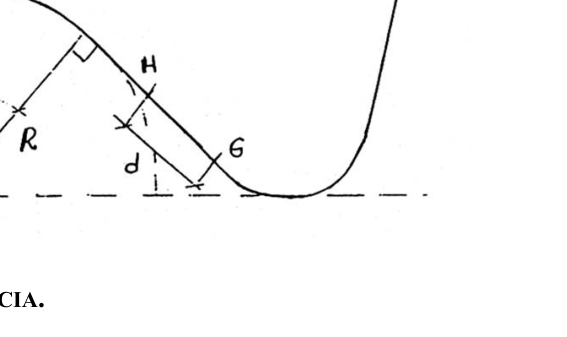
Topic: Conservation of Energy, Newtonian Mechanics Metodi: Energy Conservation Method, Free-Body Diagram, Vector Decomposition Competenze: Physical Reasoning Objects: Projectile, Inclined Plane Fonte: Testo (PDF) — p.2
Instanza nazionale - Prova teorica blu e verde - Problema 2: Un gioco interessante
Un posto del “Cordoba Shopping Center” aveva un gioco consistente in un pista, con “lomo di asino” e ramp, come schematizzato nella figura. Il gioco consisteva nel lanciare una tela da A, in modo tale che fosse intrappolata nel pozzo CD. Un giocatore con conoscenze di fisica, ispirato al gioco, decise di fare alcuni calcoli come quelli che vengono richiesti in continuazione, supponendo la pista senza ragionamento, tranne nel tratto HG:
a) Qual è la velocità minima con cui il tepe deve essere lanciato, da A, per superare il punto C? b) Qual è la velocità massima con cui il tessuto deve partire da A per essere sempre in contatto con la pista? (cioè non vola; se si allontana dalla pista il giocatore perde). c) Qual è la massima forza di ragionamento che può agire sul telaio, tra i punti H e G, per far sì che, dopo aver passato C senza che il giocatore abbia perso, ritorni direttamente al punto C?.
(Figura)
I dati: ; ; ; ;
Topic: Conservation of Energy, Newtonian Mechanics Metodi: Energy Conservation Method, Free-Body Diagram, Vector Decomposition Competenze: Physical Reasoning Objects: Projectile, Inclined Plane Fonte: Testo (PDF) — p.2
Instancia Nacional - Prueba Teorica Azul y Verde - Problema 2: Un juego interesante
One place in the “Cordoba Shopping Center” had a consistent game on a track, with “assle’s lip” and ramps, as outlined in the figure. The game consisted of throwing a weave from A, so that it would be trapped in the CD well. A player with knowledge of physics, inspired by the game, decided to make some calculations like those asked for continuously, assuming the track without reasoning, except in the HG section:
(a) What is the minimum speed at which the yarn must be thrown from A to overcome point C? (b) What is the maximum speed at which the yarn must start from A so that it is always in contact with the track? (i.e. it doesn’t fly; if it takes off the runway the player loses). (c) What is the maximum reasoning force that can be applied to the mesh between H and G points so that, having passed C without the player losing, he returns straight to C?
(Figure)
Datos: ; ; ; ;
Topic: Conservation of Energy, Newtonian Mechanics Metodi: Energy Conservation Method, Free-Body Diagram, Vector Decomposition Competenze: Physical Reasoning Objects: Projectile, Inclined Plane Fonte: Testo (PDF) — p.2
Instancia Nacional - Prueba Teorica Azul y Verde - Problema 3: Un circuito electrico de emergencia
Se dispone de una bateria de y (con resistencia interna de ) para armar un circuito de emergencia, para una vivienda rural. El circuito incluye dos lamparas de (para el comedor y una habitacion), una de para el bano y una de para el exterior. Todas estas lamparas son para una tension nominal de . Se dispone tambien de los interruptores y el cable necesario.
- Dibuje (esquematicamente) el circuito correspondiente a esta casa.
- Cual es la resistencia nominal de cada lampara? Para las preguntas siguientes, suponga la resistencia de cada lampara igual a su valor nominal.
- En el circuito esquematizado en el punto 1), Que corriente circula por cada lampara cuando se encuentran todas encendidas?
- Suponga que hay por lo menos una lampara encendida. Entonces, calcule las resistencias maxima y minima del circuito.
- Nuevamente, con por lo menos una lampara encendida, cual es el tiempo minimo de duracion de la bateria?, y el maximo?.
- Suponga ahora que se desea iluminar muchos ambientes utilizando la misma bateria antes mencionada y lamparas de () de las que se dispone tantas como sean necesarias. Cuantos ambientes se podrian iluminar sin sobrecargar el circuito?, (es decir sin que la diferencia de potencial de la linea sea menos de ).
Topic: Circuits Metodi: Kirchhoff’s Laws, Equivalent Circuit Reduction Competenze: Physical Reasoning Objects: Battery, Resistor, Switch, Wire Fonte: Testo (PDF) — p.2
Instanza nazionale - Prova teorica blu e verde - Problema 3: Un circuito elettrico di emergenza
Una batteria e (con resistenza interna ) è disponibile per montare un circuito di emergenza, per una casa rurale. Il circuito comprende due lampadine (per il salotto da pranzo e una camera), una per il bagno e una per l’esterno. Tutti questi lampi sono per una tensione nominale . Sono inoltre disponibili gli interruttori e il cavo necessario.
- Disegna (squematicamente) il circuito corrispondente a questa casa.
- Qual è la resistenza nominale di ciascuna lampada? Per le domande seguenti, supponga che la resistenza di ciascuna lampada sia pari al suo valore nominale.
- Nel circuito descritto al punto 1), Che corrente circola per ogni lampada quando tutte sono accese?
- Supponiamo che ci sia almeno una lampada accesa. Quindi calcola le resistenze massime e minime del circuito.
- Ancora una volta, con almeno una lampada accesa, qual è il minimo tempo di durata della batteria? e il massimo?
- Supponiamo che si desidera illuminare molti ambienti utilizzando la stessa batteria e lampadine () di cui si dispone per quanto necessario. Quanti ambienti possono essere illuminati senza sovraccaricare il circuito? (cioè senza che la differenza di potenziale della linea sia inferiore a ).
Topic: Circuits Metodi: Kirchhoff’s Laws, Equivalent Circuit Reduction Competenze: Physical Reasoning Objects: Battery, Resistor, Switch, Wire Fonte: Testo (PDF) — p.2
The Commission has also adopted a number of measures to ensure that the Commission’s proposals are implemented in accordance with the principles laid down in the Directive.
A and battery (with internal resistance of ) is available to assemble an emergency circuit for a rural dwelling. The circuit includes two lamps (for the dining room and one room), one for the bath and one for the outside. All these lamps are for a rated voltage of . The necessary switches and cable are also provided.
- Draw (squatically) the circuit corresponding to this house.
- What is the nominal resistance of each lamp? For the following questions, assume that the resistance of each lamp is equal to its face value.
- In the circuit outlined in point 1), What current is flowing through each lamp when all of them are on?
- Suppose there is at least one lamp on. Then calculate the maximum and minimum resistance of the circuit.
- Again, with at least one lamp on, what is the minimum battery life time, and maximum?
- Suppose now that you want to light many environments using the same battery and () lamps as many as are needed. How many environments could be illuminated without overloading the circuit? (i.e. without the line potential difference being less than ).
Topic: Circuits Metodi: Kirchhoff’s Laws, Equivalent Circuit Reduction Competenze: Physical Reasoning Objects: Battery, Resistor, Switch, Wire Fonte: Testo (PDF) — p.2
Instancia Nacional - Prueba Experimental Azul y Verde: …y tambien puede usarse como ohmetro
…Y TAMBIEN PUEDE USARSE COMO OHMETRO.
OBJETIVOS: Medir valores de resistencias con el menor error posible. Con los elementos provistos disene y arme un dispositivo adecuado a tal fin. Tenga presente el campo magnetico terrestre.
ELEMENTOS:
- Una brujula.
- Una bobina de 100 vueltas.
- Una pila de 1,5 V.
- Dos resistencias de valores conocidos.
- Tres resistencias de valores desconocidos (a medir).
- Un zocalo de conexion.
- Cables.
- Una regla, papel milimetrado y cinta adhesiva.
REQUERIMIENTOS: Solo podra utilizar los elementos provistos, papel, lapiz o boligrafo y calculadora no programable. Al finalizar el trabajo debera entregar un informe que incluya los siguientes puntos:
- Descripcion del metodo experimental utilizado.
- Desarrollo del principio de funcionamiento del aparato disenado.
- Valores obtenidos en las mediciones realizadas.
- Fuentes de error y analisis de como influyen en el resultado final.
- Resultado final de lo solicitado.
- Comentarios que desee realizar.
Topic: Magnetism, Circuits Metodi: Experimental Data Analysis, Error Propagation Competenze: Experimental Data Analysis, Physical Reasoning Objects: Coil, Battery, Resistor, Wire Fonte: Testo (PDF) — p.2
Instanza nazionale - Prova sperimentale blu e verde: …e può essere utilizzata anche come ohmetro
E può essere usato anche come O’Hammetro.
OBJETTI: Misurare valori di resistenza con il minor errore possibile. Con gli elementi forniti disegna e armammo un dispositivo adatto a tale scopo. Tenete presente il campo magnetico terrestre.
Elementi:
- Una brucia.
- Una bobina di 100 giri.
- Una pila a 1,5 V.
- Due resistenze di valori noti.
- Tre resistenze di valori sconosciuti (da misurare).
- Un zocco di connessione.
- Cable.
- Una regola, carta millimetrica e nastri.
RICERICI: Può utilizzare solo gli elementi forniti, carta, penna o penna e calcolatore non programmabile. Al termine del lavoro deve presentare una relazione che include i seguenti punti:
- Descrizione del metodo sperimentale utilizzato.
- Sviluppo del principio di funzionamento dell’apparecchio progettato.
- Valori ottenuti dalle misurazioni effettuate.
- Fonti di errore e analisi di come influenzano il risultato finale.
- Risultato finale della richiesta.
- Commenti che vuoi fare.
Topic: Magnetism, Circuits Metodi: Experimental Data Analysis, Error Propagation Competenze: Experimental Data Analysis, Physical Reasoning Objects: Coil, Battery, Resistor, Wire Fonte: Testo (PDF) — p.2
National Authority - Blue and Green Experimental Test: … and may also be used as an ohmetre
…and can also be used as a metric.
Objectives: Measure resistance values with the least possible error. With the elements provided, design and equip a suitable device for this purpose. Keep the Earth’s magnetic field in mind.
The following elements:
- A witch.
- A 100-round coil.
- A 1.5 V battery.
- Two known value resistance.
- Three resistors of unknown values (to be measured).
- A connecting sock.
- The cables.
- A rule, millimeter paper and tape.
The following requirements: You can only use the items provided, paper, pen or pen and a non-programmable calculator. At the end of the work, you must submit a report containing the following points:
- Description of the experimental method used.
- Development of the principle of operation of the designed apparatus.
- Values obtained from the measurements made.
- Error sources and analysis of how they influence the final result.
- Final result of the requested.
- Any comments you want to make.
Topic: Magnetism, Circuits Metodi: Experimental Data Analysis, Error Propagation Competenze: Experimental Data Analysis, Physical Reasoning Objects: Coil, Battery, Resistor, Wire Fonte: Testo (PDF) — p.2
Instancia Local - 1. Formosa Azul
Un movil marcha por una carretera rectilinea a razon de 20m/s, durante 5 segundos. A partir de ese momento, adquiere una aceleracion de y durante 4 s, marcha en esas condiciones. Al iniciarse el quinto segundo, aplica los frenos y su velocidad disminuye a razon de 2m/s cada segundo, hasta detenerse. Se pregunta: a) Que tipo de movimiento posee el movil en los primeros 5 segundos? b) Que tipo de movimiento adquiere en los 4 segundos siguientes? c) Cual es la aceleracion durante la frenada? d) Como resultan las aceleraciones del movil en los casos b) y c)? e) En que caso la aceleracion tiene el mismo sentido que el de la velocidad del movil? f) En que momento la aceleracion posee sentido contrario al movimiento? g) Indica en que momento sobre el movil :
- no actuan fuerzas (o las que actuan estan en equilibrio).
- actuan fuerzas. En ambos casos, justifica tu respuesta. h) En que instantes el movil esta sujeto al Principio de Masa o al de Inercia?
Topic: Newtonian Mechanics Metodi: Kinematic Equations Competenze: Physical Reasoning Objects: — Fonte: Testo (PDF) — p.2
Instanza locale - 1. Formosa azzurra
Un veicolo cammina su una strada rettilinea a velocità di 20 m/s, per 5 secondi. A partire da quel momento, acquista un’accelerazione di e per 4 secondi, procede in quelle condizioni. All’inizio del quinto secondo, applica i freni e la sua velocità diminuisce a ragione di 2m/s ogni secondo, fino a fermarsi. Si chiede: a) Che tipo di movimento ha il motore nei primi 5 secondi? b) Che tipo di movimento acquista nei 4 secondi successivi? c) Qual è l’accelerazione durante il frenaggio? (d) Come risultano le accelerazioni del veicolo nei casi (b) e (c)? e) In che caso l’accelerazione ha lo stesso senso di velocità del veicolo? f) Quando l’accelerazione ha un senso contrario al movimento? g) Indica il momento in cui il veicolo:
- non sono in atto forze (o quelle che agiscono sono in equilibrio).
- agire con forza. In entrambi i casi, giustifica la tua risposta. h) In quali momenti il veicolo è soggetto al principio di massa o di inerzia?
Topic: Newtonian Mechanics Metodi: Kinematic Equations Competenze: Physical Reasoning Objects: — Fonte: Testo (PDF) — p.2
Instancia Local - 1. Formosa Azul
A mobile vehicle travels on a straight road at a speed of 20 m/s for 5 seconds. From that moment on, it gains an acceleration of and for 4 seconds, it runs under those conditions. At the start of the fifth second, the brakes are applied and the speed decreases by 2 m/s every second until it stops. He wonders: a) Que tipo de movimiento posee el movil en los primeros 5 segundos? (b) What kind of movement does it acquire in the next 4 seconds? (c) What is the acceleration during braking? (d) What are the accelerations of the vehicle in cases (b) and (c)? (e) In which case is the acceleration the same as the speed of the moving vehicle? (f) When does acceleration have a sense of opposite motion? (g) Indicate the time on the mobile:
- no forces are acting (or those acting are in balance).
- force to act. In both cases, justify your answer. (h) At what moments is the mobile subject to the Mass or inertia principle?
Topic: Newtonian Mechanics Metodi: Kinematic Equations Competenze: Physical Reasoning Objects: — Fonte: Testo (PDF) — p.2
Instancia Local - 2. Formosa Azul
Una vagoneta de 1 Tn, esta sobre un plano inclinado y en equilibrio por la accion de un cable paralelo al plano. a) Cuanto vale la tension del cable? b) Cual sera su valor cuando aquel forme un angulo de con la horizontal?
(figura)
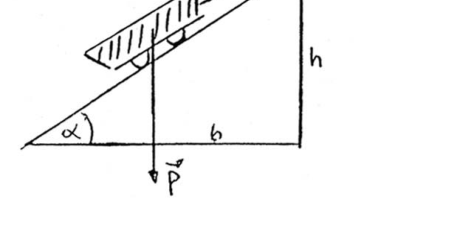
Topic: Newtonian Mechanics, Rigid Body Statics Metodi: Free-Body Diagram, Vector Decomposition Competenze: Physical Reasoning Objects: Cart, Inclined Plane, String Fonte: Testo (PDF) — p.2
Instanza locale - 2. Formosa azzurra
Un vagone di 1 Tn, è su un piano inclinato e in equilibrio per l’azione di un cavo parallelo al piano. a) Qual è il valore della tensione del cavo? b) Qual è il suo valore quando esso forma un angolo di con la orizzontale?
(Figura)
Topic: Newtonian Mechanics, Rigid Body Statics Metodi: Free-Body Diagram, Vector Decomposition Competenze: Physical Reasoning Objects: Cart, Inclined Plane, String Fonte: Testo (PDF) — p.2
The Commission shall adopt delegated acts in accordance with Article 21 of this Regulation. Other, including:
A 1 Tn wagon is on an inclined plane and balanced by the action of a parallel cable to the plane. (a) How much is the cable voltage? (b) What will its value be when it forms an angle of with the horizontal?
(Figure)
Topic: Newtonian Mechanics, Rigid Body Statics Metodi: Free-Body Diagram, Vector Decomposition Competenze: Physical Reasoning Objects: Cart, Inclined Plane, String Fonte: Testo (PDF) — p.2
Instancia Local - 3. Formosa Azul
Un cuerpo de 20 Kg cae desde 30m de altura. Halla: a) La energia cinetica al tocar el suelo. b) La energia potencial a los 30m de altura. c) La energia cinetica y la energia potencial del cuerpo cuando se encuentra en el punto medio de su trayectoria. d) La velocidad del cuerpo al chocar contra el suelo.
Topic: Conservation of Energy Metodi: Energy Conservation Method Competenze: Physical Reasoning Objects: — Fonte: Testo (PDF) — p.2
Instanza locale - 3. Formosa azzurra
Un corpo di 20 kg cade da 30 metri di altezza. Scopri: a) L’energia cinetica che tocca il suolo. b) Energia potenziale a 30 m di altezza. c) L’energia cinetica e l’energia potenziale del corpo quando si trova nel punto medio della sua tragitura. d) La velocità del corpo colpito dal suolo.
Topic: Conservation of Energy Metodi: Energy Conservation Method Competenze: Physical Reasoning Objects: — Fonte: Testo (PDF) — p.2
The Commission shall adopt implementing acts in accordance with Article 21 of Regulation (EC) No 1272/2009. Other, including:
A 20kg body falls from 30m. Find out: (a) Kinetic energy when touching the ground. (b) Potential energy at 30 m. (c) The kinetic energy and potential energy of the body when it is in the middle of its path. (d) The speed of the body when it hits the ground.
Topic: Conservation of Energy Metodi: Energy Conservation Method Competenze: Physical Reasoning Objects: — Fonte: Testo (PDF) — p.2
Instancia Local - 4. Santa Cruz Verde
Una caja de carton cubica de 3m de lado se encuentra flotando a la deriva en el mar con una Vel. Constante de 4 m/seg. Una bala disparada en forma normal a una de las caras, y al movimiento de la caja, la atraviesa. El orificio de entrada de la caja se encuentra en el centro de la cara mientras que el de la salida se desplaza 2 cm. Averiguar la Vel. de la bala.
Topic: Newtonian Mechanics Metodi: Kinematic Equations Competenze: Physical Reasoning Objects: Projectile, Container Fonte: Testo (PDF) — p.2
Instanza locale - 4. Santa Cruz Verde
Una scatola di cartone cubo di 3 metri laterali si trova galleggiando in mare con una Vel. Costante di 4 m/sec. Una pallottola viene sparata in modo normale in una delle facce, e al movimento della scatola, la attraversa. Il foro di ingresso della scatola si trova al centro del viso mentre quello di uscita si sposta 2 cm. Scoprire la Vel. della pallottola.
Topic: Newtonian Mechanics Metodi: Kinematic Equations Competenze: Physical Reasoning Objects: Projectile, Container Fonte: Testo (PDF) — p.2
The Commission shall adopt implementing acts in accordance with Article 21 of Regulation (EC) No 1272/2009. The Commission shall adopt implementing acts in accordance with Article 21 of this Regulation.
A 3m-wide cubic cardboard box is found drifting in the sea with a Vel. Constant of 4 m/s. A bullet is fired normally at one of the faces, and as the box moves, it crosses it. The box entry hole is in the center of the face while the exit hole moves 2 cm. Find out the Vel. from the bullet.
Topic: Newtonian Mechanics Metodi: Kinematic Equations Competenze: Physical Reasoning Objects: Projectile, Container Fonte: Testo (PDF) — p.2
Instancia Local - 5. Santa Cruz Verde
Para cada uno de los siguientes casos calcular el valor que indicara el dinamometro.
a) (figura: balanza/dinamometro con masas de 100 Kg y 600 Kg en un sistema con poleas) b) (figura: dinamometro horizontal con 30 Kg y masa colgante de 60 Kg) c) (figura: cilindro de aluminio sumergido en agua colgado de un dinamometro)
Datos: ;
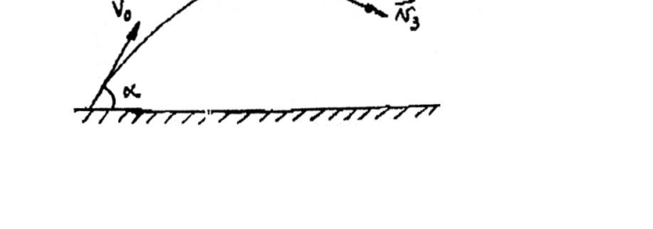
Topic: Newtonian Mechanics, Fluid Mechanics Metodi: Free-Body Diagram, Hydrostatic Equilibrium Competenze: Physical Reasoning Objects: Pulley, Cylinder, Block Fonte: Testo (PDF) — p.2
Instanza locale - 5. Santa Cruz Verde
Per ciascun dei seguenti casi calcolare il valore indicato dal dinamometro.
a) (figura: bilancia/dinamometro con masse di 100 Kg e 600 Kg in un sistema con pole) b) (figura: dinamometro orizzontale con 30 Kg e massa pendente di 60 Kg) c) (figura: cilindro di alluminio immerso in acqua appeso a un dinamometro)
Data: ;
Topic: Newtonian Mechanics, Fluid Mechanics Metodi: Free-Body Diagram, Hydrostatic Equilibrium Competenze: Physical Reasoning Objects: Pulley, Cylinder, Block Fonte: Testo (PDF) — p.2
Instancia Local - 5. Santa Cruz Verde
For each of the following cases calculate the value indicated by the dynamometer.
(a) (Figure: scale/dynamometer with masses of 100 Kg and 600 Kg in a pulley system) (Figure: horizontal dynamometer with 30 Kg and 60 Kg of suspended mass) (Figure: aluminium cylinder immersed in water suspended from a dynamometer)
Datos: ;
Topic: Newtonian Mechanics, Fluid Mechanics Metodi: Free-Body Diagram, Hydrostatic Equilibrium Competenze: Physical Reasoning Objects: Pulley, Cylinder, Block Fonte: Testo (PDF) — p.2
Instancia Local - 6. Capital Federal Verde
Se lanza una granada de masa con una velocidad inicial formando un angulo con la horizontal. Cuando alcanza la altura maxima explota en tres pedazos iguales cuyas velocidades se muestran en la figura 2. a) Si y calcular la velocidad y el angulo que forma con la horizontal. b) Calcular donde cae cada pedazo.
(figura)
Topic: Conservation of Momentum, Newtonian Mechanics Metodi: Conservation of Momentum, Kinematic Equations, Vector Decomposition Competenze: Physical Reasoning Objects: Projectile Fonte: Testo (PDF) — p.2
L’autorità locale - 6. Capitale federale verde**
Una granata di massa con velocità iniziale viene lanciata formando un angolo con la orizzontale. Quando raggiunge la massima altezza esplode in tre pezzi uguali le cui velocità sono mostrate nella figura 2. a) Se e calcolano la velocità e l’angolo che forma con la orizzontale. b) Calcolare dove cade ogni pezzo.
(Figura)
Topic: Conservation of Momentum, Newtonian Mechanics Metodi: Conservation of Momentum, Kinematic Equations, Vector Decomposition Competenze: Physical Reasoning Objects: Projectile Fonte: Testo (PDF) — p.2
The Commission shall adopt implementing acts in accordance with Article 6 of this Regulation. The amount of the loan is EUR 10 million.
A mass grenade with an initial speed is thrown forming an angle with the horizontal. When it reaches maximum height it explodes into three equal pieces whose velocities are shown in Figure 2. (a) If and calculate the speed and the angle formed with the horizontal. (b) Calculate where each piece falls.
(Figure)
Topic: Conservation of Momentum, Newtonian Mechanics Metodi: Conservation of Momentum, Kinematic Equations, Vector Decomposition Competenze: Physical Reasoning Objects: Projectile Fonte: Testo (PDF) — p.2
Instancia Local - 7. Capital Federal Verde
Dos masas y desconocida se hallan atadas por una cuerda inextensible y sin masa, a traves de una polea de masa y radio , como se muestra en la figura. Hay rozamiento entre las masas y el piso con un coeficiente dinamico . Se tira de con una fuerza , produciendo una aceleracion . Calcular y el torque total sobre la polea. Si ahora se desea que el sistema este en equilibrio, cual debe ser ?.
Datos: El momento de inercia de la polea es:
(figura)
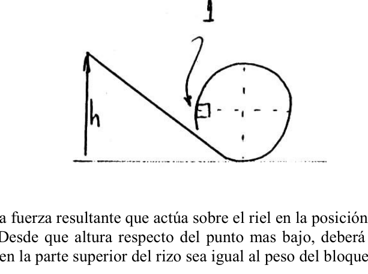
Topic: Rotational Dynamics, Newtonian Mechanics Metodi: Torque & Angular Momentum Analysis, Free-Body Diagram Competenze: Physical Reasoning Objects: Pulley, Block, String, Inclined Plane Fonte: Testo (PDF) — p.2
Instanza locale - 7. Capitale federale verde
Due masse e non conosciute sono legate da una corda inestensibile e senza massa, attraverso un polea di massa e un raggio , come mostrato nella figura. C’è un abbattimento tra le masse e il pavimento con un coefficiente dinamico . Si tira da con una forza , producendo un’accelerazione . Calcolare e la torsione totale sul pollice. Si ahora se desea que el sistema este en equilibrio, cual debe ser ?.
Dati: Il momento di inerzia del polo è:
(Figura)
Topic: Rotational Dynamics, Newtonian Mechanics Metodi: Torque & Angular Momentum Analysis, Free-Body Diagram Competenze: Physical Reasoning Objects: Pulley, Block, String, Inclined Plane Fonte: Testo (PDF) — p.2
The Commission shall adopt implementing acts in accordance with Article 21 of Regulation (EC) No 1272/2009. The amount of the loan is EUR 10 million.
Two unknown masses and are bound by an unextended, massless rope, through a mass pulley and a radius , as shown in Figure 1. There is friction between the masses and the floor with a dynamic coefficient . It is pulled from with a force , producing an acceleration . Calculate and the total torque on the pulley. If the system is now to be balanced, which should be ?.
Data: The moment of inertia of the pulley is:
(Figure)
Topic: Rotational Dynamics, Newtonian Mechanics Metodi: Torque & Angular Momentum Analysis, Free-Body Diagram Competenze: Physical Reasoning Objects: Pulley, Block, String, Inclined Plane Fonte: Testo (PDF) — p.2
Instancia Local - 8. Neuquen Verde
Un pequeno bloque de masa m = 20 gr. resbala en una via sin rozamiento en forma de rizo. Parte del reposo a partir de una altura h = 5 m.
(figura)
Determinar: a) la fuerza resultante que actua sobre el riel en la posicion 1. b) Desde que altura respecto del punto mas bajo, debera dejarse caer para que la fuerza sobre el riel en la parte superior del rizo sea igual al peso del bloque?
Topic: Conservation of Energy, Newtonian Mechanics Metodi: Energy Conservation Method, Free-Body Diagram Competenze: Physical Reasoning Objects: Block Fonte: Testo (PDF) — p.2
L’autorità locale - 8. Neocene Verde**
Un piccolo blocco di massa m = 20 gr. scivola in una via senza rughe in forma di riscia. Parte del riposo da un’altezza h = 5 m.
(Figura)
Determinare: a) la forza risultante che agisce sul binario in posizione 1. b) Da che altezza rispetto al punto più basso, deve essere abbassato per far sì che la forza sul binario nella parte superiore del riso sia uguale al peso del blocco?
Topic: Conservation of Energy, Newtonian Mechanics Metodi: Energy Conservation Method, Free-Body Diagram Competenze: Physical Reasoning Objects: Block Fonte: Testo (PDF) — p.2
The Commission shall adopt implementing acts in accordance with Article 8 of Regulation (EC) No 1272/2009. The following table shows the results of the evaluation:
A small block of mass m = 20 grams. It slips in a smooth, crease-like path. Part of the rest from a height h = 5 m.
(Figure)
Determine: (a) the resulting force acting on the rail at position 1. (b) From what height with respect to the lowest point must the force on the rail at the top of the ridge be dropped to the weight of the block?
Topic: Conservation of Energy, Newtonian Mechanics Metodi: Energy Conservation Method, Free-Body Diagram Competenze: Physical Reasoning Objects: Block Fonte: Testo (PDF) — p.2
Instancia Local - 9. Neuquen Verde
Una esfera hueca, construida con un material de densidad 7 y peso 10 kg. flota en agua de modo que la linea de flotacion pasa por el centro de la esfera. Que espesor tiene la esfera?
Topic: Fluid Mechanics Metodi: Hydrostatic Equilibrium Competenze: Physical Reasoning Objects: Sphere Fonte: Testo (PDF) — p.2
Instanza locale - 9. Neocene Verde
Una sfera vuota, costruita con un materiale di densità 7 e peso 10 kg. fluttuare in acqua in modo che la linea di galleggiamento attraversare il centro della sfera. Que espesor tiene la esfera?
Topic: Fluid Mechanics Metodi: Hydrostatic Equilibrium Competenze: Physical Reasoning Objects: Sphere Fonte: Testo (PDF) — p.2
Instancia Local - 9. Neuquen Verde
A hollow sphere, constructed with a material of density 7 and weight 10 kg. floats in water so that the floating line passes through the center of the sphere. Que espesor tiene la esfera?
Topic: Fluid Mechanics Metodi: Hydrostatic Equilibrium Competenze: Physical Reasoning Objects: Sphere Fonte: Testo (PDF) — p.2
Instancia Local - 10. Buenos Aires Verde
Para el sistema de cuerpos de la figura, calcular su aceleracion y la tension en cada cuerda, suponiendo despreciables los rozamientos. Repetir el problema si entre cada uno de los cuerpos y el piso existe un coeficiente de rozamiento .
(figura)
Datos: ; ; ;
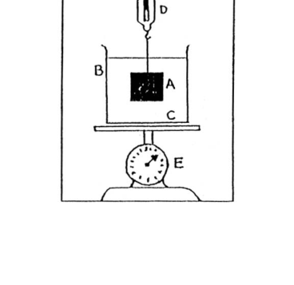
Topic: Newtonian Mechanics Metodi: Free-Body Diagram, Vector Decomposition Competenze: Physical Reasoning Objects: Block, String, Pulley, Inclined Plane Fonte: Testo (PDF) — p.2
Instanza locale - 10. Buenos Aires Verde
Per il sistema dei corpi della figura, calcolare la sua accelerazione e la tensione su ogni corda, assumendo sconsiderati gli arruggi. Ripetere il problema se tra ogni corpo e il pavimento c’è un coefficiente di rottura .
(Figura)
I dati: ; ; ;
Topic: Newtonian Mechanics Metodi: Free-Body Diagram, Vector Decomposition Competenze: Physical Reasoning Objects: Block, String, Pulley, Inclined Plane Fonte: Testo (PDF) — p.2
Instancia Local - 10. Buenos Aires Verde
For the body system in the figure, calculate its acceleration and tension on each string, assuming the friction is negligible. Repeat the problem if there is a friction coefficient between each body and the floor.
(Figure)
Datos: ; ; ;
Topic: Newtonian Mechanics Metodi: Free-Body Diagram, Vector Decomposition Competenze: Physical Reasoning Objects: Block, String, Pulley, Inclined Plane Fonte: Testo (PDF) — p.2
Instancia Local - 11. Buenos Aires Verde
La casa de Juan se encuentra a 900 m (9 cuadras) de la casa de Diana. Caminando con velocidad constante, Juan tarda 10 minutos en cubrir esa distancia, mientras que Diana la recorre en 15 minutos. Cierto dia salen ambos a las 15Hs, cada uno desde su casa y dirigiendose a la casa del otro. Determinar a que hora y a que distancia de la casa de Diana se encuentran. Trazar un grafico posicion-tiempo y velocidad-tiempo.
Topic: Newtonian Mechanics Metodi: Kinematic Equations, Graph Linearization Competenze: Physical Reasoning Objects: — Fonte: Testo (PDF) — p.2
Instanza locale - 11. Buenos Aires Verde
La casa di Giovanni si trova a 900 m (9 quadri) dalla casa di Diana. Camminando a velocità costante, Juan percorre quella distanza in 10 minuti, mentre Diana la percorre in 15 minuti. Un giorno entrambi uscivano alle 15:00, ognuno dalla casa e si dirigeva all’altra casa. Determinare l’ora e la distanza dalla casa di Diana. Tracciare un grafico di posizione-tempo e velocità-tempo.
Topic: Newtonian Mechanics Metodi: Kinematic Equations, Graph Linearization Competenze: Physical Reasoning Objects: — Fonte: Testo (PDF) — p.2
The Commission shall adopt implementing acts in accordance with Article 21 of Regulation (EC) No 1272/2009. The Commission shall adopt delegated acts in accordance with Article 21 of this Regulation.
John’s house is 900 m (9 sq ft) from Diana’s house. Walking at a constant speed, it takes Juan 10 minutes to cover that distance, while Diana does it in 15 minutes. One day they both leave at 3 p.m., each from his home and headed for the other’s house. Determine what time and distance from Diana’s house they are. Draw a time-position and speed-time chart.
Topic: Newtonian Mechanics Metodi: Kinematic Equations, Graph Linearization Competenze: Physical Reasoning Objects: — Fonte: Testo (PDF) — p.2
Instancia Local - 12. Mendoza Verde
El bloque A de la figura esta suspendido mediante una cuerda, de un dinamometro D y se encuentra sumergido en un liquido C contenido en el vaso B. El peso del vaso es 8,9N y el del liquido es 13,35N. El dinamometro D indica 22,25N y el dinamometro de compresion E 66,78N. Sabiendo que la arista del bloque cubico es de 10 cm: a) Cual es el peso por unidad de volumen del liquido? b) Que indicarian los dinamometros D y E si se saca el bloque A fuera del liquido? c) Si en el liquido anterior flota el bloque, suponiendolo ahora de caucho () y se vierte el recipiente petroleo () hasta que la capa superior de petroleo se encuentra a 2 cm por encima de la cara superior del bloque, averiguar: c1) Que espesor tiene la capa de petroleo? c2) Cual es la presion hidrostatica en la cara inferior del bloque en Pa? c3) Cual es la presion absoluta en la cara inferior del bloque en Pa?
(figura)
Topic: Fluid Mechanics Metodi: Hydrostatic Equilibrium, Free-Body Diagram Competenze: Physical Reasoning Objects: Block, Container, String Fonte: Testo (PDF) — p.2
Instanza locale - 12. Mendoza Verde
Il blocco A della figura è sospeso con una corda, di un dinamometro D e si trova immerso in un liquido C contenuto nel vaso B. Il peso del vaso è di 8,9 N e quello del liquido è di 13,35 N. Il dinamometro D indica 22,25N e il dinamometro di compressione E 66,78N. Sapendo che l’orlo del blocco cubico è di 10 cm: a) Qual è il peso per unità di volume del liquido? b) Che indicazioni avrebbero dato i dinamometri D e E se il blocco A fosse stato estratto dal liquido? c) Se il blocco flotta nel liquido precedente, supponendo che sia ora di gomma () e versando il recipiente petrolifero () fino a che la superficie del blocco sia a 2 cm dall’alto, verificare: c1) Quale è lo spessore del strato di petrolio? c2) Qual è la pressione idrostatica sul lato inferiore del blocco in Pa? c3) Qual è la pressione assoluta sul lato inferiore del blocco in Pa?
(Figura)
Topic: Fluid Mechanics Metodi: Hydrostatic Equilibrium, Free-Body Diagram Competenze: Physical Reasoning Objects: Block, Container, String Fonte: Testo (PDF) — p.2
Instancia Local - 12. Mendoza Verde
The block A of the figure is suspended by a rope, a dynamometer D and is submerged in a liquid C contained in the glass B. The weight of the glass is 8.9N and that of the liquid is 13.35N. The dynamometer D indicates 22,25N and the compression dynamometer E 66,78N. Knowing that the edge of the cube block is 10 cm: (a) What is the weight per unit volume of liquid? b) Que indicarian los dinamometros D y E si se saca el bloque A fuera del liquido? (c) If the block floats in the above liquid, assuming it is now rubber () and the oil tank () is poured until the top layer of oil is 2 cm above the top face of the block, find out: c1) What is the thickness of the oil layer? c2) What is the hydrostatic pressure on the lower side of the block in Pa? c3) What is the absolute pressure on the lower side of the block in Pa?
(Figure)
Topic: Fluid Mechanics Metodi: Hydrostatic Equilibrium, Free-Body Diagram Competenze: Physical Reasoning Objects: Block, Container, String Fonte: Testo (PDF) — p.2
Instancia Local - 13. Mendoza Verde
Un hombre da un empujon a una caja de 4Kg. Como consecuencia, la misma se desplaza con una velocidad inicial de 6 m/s por el plano horizontal. Luego comienza a subir por un plano inclinado de . Hay rozamiento entre el cuerpo y la superficie del plano inclinado. Por esta causa, el cuerpo se detiene a una altura de 1,5m en vez de detenerse mas arriba. a) Calcular la fuerza de rozamiento que actua sobre el cuerpo, suponiendo que es constante. b) Cual sera la velocidad del cuerpo al pie del plano inclinado, cuando retorna? c) Suponiendo que la caja sigue subiendo y cae desde una altura de 2m sobre una plataforma montada sobre resortes; la plataforma es empujada hacia abajo hasta una distancia maxima de 0,2m por debajo de su posicion inicial antes de rebotar. c1) Cual es la velocidad de la caja en el instante en que la plataforma ha descendido 0,1m? NOTA: - La altura de 2m es con respecto a la plataforma. c2) Si en lugar de caer la caja, se apoya la misma suavemente sobre la plataforma, cuanto habria descendido esta?
Topic: Conservation of Energy, Newtonian Mechanics Metodi: Energy Conservation Method, Free-Body Diagram, Hooke’s Law Competenze: Physical Reasoning Objects: Block, Inclined Plane, Spring Fonte: Testo (PDF) — p.2
Instanza locale - 13. Mendoza Verde
Un uomo spinge una scatola di 4 kg. Di conseguenza, si sposta con una velocità iniziale di 6 m/s per il piano orizzontale. Comincia poi a salire per un piano inclinato di . C’è un’acciaio tra il corpo e la superficie del piano inclinato. Per questo il corpo si ferma ad un’altezza di 1,5 metri invece di fermarsi più in alto. a) Calcolare la forza di ruggine che agisce sul corpo, supponendo che sia costante. b) Qual è la velocità del corpo al piede del piano inclinato, quando ritorna? c) Supponendo che la cassa continui a salire e a cadere da un’altezza di 2 m su una piattaforma montata su spruzzi; la piattaforma viene spinta verso il basso fino a una distanza massima di 0,2 m sotto la sua posizione iniziale prima di rimbalzare. c1) Qual è la velocità della cassa nell’istante in cui la piattaforma è scesa 0,1 m? NOTA: - L’altezza di 2 m è rispetto alla piattaforma. c2) Se invece di cadere la scatola fosse appoggiata sulla piattaforma, quanto sarebbe scesa?
Topic: Conservation of Energy, Newtonian Mechanics Metodi: Energy Conservation Method, Free-Body Diagram, Hooke’s Law Competenze: Physical Reasoning Objects: Block, Inclined Plane, Spring Fonte: Testo (PDF) — p.2
The Commission shall adopt implementing acts in accordance with Article 21 of Regulation (EC) No 1272/2009. The Commission shall adopt delegated acts in accordance with Article 21 of this Regulation.
A man pushes a 4kg box. As a result, it moves at an initial speed of 6 m/s along the horizontal plane. Then it starts to rise up a slope of . There’s a friction between the body and the surface of the inclined plane. For this reason, the body stops at a height of 1.5m instead of stopping higher. (a) Calculate the force of friction acting on the body, assuming that it is constant. (b) What will be the body’s speed at the base of the inclined plane when it returns? (c) Assuming that the box continues to rise and fall from a height of 2 m on a platform mounted on springs; the platform is pushed down to a maximum distance of 0,2 m below its initial position before bouncing. c1) What is the speed of the box at the moment the platform has descended 0.1m? NOTE: - The height of 2m is with respect to the platform. c2) If instead of dropping the box, the box is gently supported on the platform, how much would it have dropped?
Topic: Conservation of Energy, Newtonian Mechanics Metodi: Energy Conservation Method, Free-Body Diagram, Hooke’s Law Competenze: Physical Reasoning Objects: Block, Inclined Plane, Spring Fonte: Testo (PDF) — p.2
Instancia Local - 14. Buenos Aires Verde
Determinara entre que valores puede variar P para que el bloque de 80 kg no se deslice hacia arriba ni hacia abajo. El coeficiente de rozamiento estatico entre el bloque y el plano inclinado es .
(figura)
Topic: Newtonian Mechanics, Rigid Body Statics Metodi: Free-Body Diagram, Vector Decomposition Competenze: Physical Reasoning Objects: Block, Inclined Plane, Pulley, String Fonte: Testo (PDF) — p.2
Instanza locale - 14. Buenos Aires Verde
Determinare tra quali valori P può variare in modo che il blocco di 80 kg non scenda verso l’alto o verso il basso. Il coefficiente di rottura statica tra il blocco e il piano inclinato è .
(Figura)
Topic: Newtonian Mechanics, Rigid Body Statics Metodi: Free-Body Diagram, Vector Decomposition Competenze: Physical Reasoning Objects: Block, Inclined Plane, Pulley, String Fonte: Testo (PDF) — p.2
The Commission shall adopt implementing acts in accordance with Article 14 of this Regulation. The Commission shall adopt delegated acts in accordance with Article 21 of this Regulation.
Determine between which values P can vary so that the 80 kg block does not slide up or down. The static friction coefficient between the block and the slope plane is .
(Figure)
Topic: Newtonian Mechanics, Rigid Body Statics Metodi: Free-Body Diagram, Vector Decomposition Competenze: Physical Reasoning Objects: Block, Inclined Plane, Pulley, String Fonte: Testo (PDF) — p.2
Instancia Local - 15. Mendoza Azul
Una bola de masa M se desplaza con velocidad V constante en un plano horizontal, hasta llegar a un plano inclinado de angulo y L de largo, por el cual desciende pasando a un plano horizontal. Finalmente llega a otro plano inclinado cuyo angulo es por el cual asciende. Considere nulo el rozamiento. Calcule: la distancia que correra la bola por el segundo plano inclinado antes de detenerse completamente, y si volviera al punto de partida, con que energia cinetica lo haria?. Si la bola es de plomo cual es la variacion de temperatura que sufre, al volver a la posicion inicial, suponiendo que el plano por el que se desplaza no absorbe calor?. Ver grafico 1. Datos: M: 8 Kg. V: 6 m/s. . . L: 2,66 m Ce Pb: 0,030 cal/g c.
(figura)
Topic: Conservation of Energy, Thermodynamics Metodi: Energy Conservation Method, First Law of Thermodynamics Competenze: Physical Reasoning Objects: Ball, Inclined Plane Fonte: Testo (PDF) — p.2
Instanza locale - 15. Mendoza Azul
Una palla di massa M si muove a velocità V costante in un piano orizzontale, fino a raggiungere un piano inclinato di angolo e L di lunghezza, per il quale scende passando a un piano orizzontale. Alla fine arriva ad un altro piano inclinato il cui angolo è da cui sale. Considera nulla il ruggine. Calcule: la distancia que correra la bola por el segundo plano inclinado antes de detenerse completamente, y si volviera al punto de partida, con que energia cinetica lo haria?. Se la palla è di piombo , qual è la variazione di temperatura che subisce, al ritorno alla posizione iniziale, supponendo che il piano attraverso il quale si sposta non assorba calore? Vedi grafico 1. Dati: M: 8 kg. V: 6 m/s. . . L: 2,66 m Ce Pb: 0,030 cal/g c.
(Figura)
Topic: Conservation of Energy, Thermodynamics Metodi: Energy Conservation Method, First Law of Thermodynamics Competenze: Physical Reasoning Objects: Ball, Inclined Plane Fonte: Testo (PDF) — p.2
Instancia Local - 15. Mendoza Azul
A ball of mass M moves at constant V velocity in a horizontal plane, until it reaches an inclined angle plane and L long, through which it descends passing to a horizontal plane. Finally it reaches another sloping plane whose angle is from which it rises. Consider the friction null. Calcule: la distancia que correra la bola por el segundo plano inclinado antes de detenerse completamente, y si volviera al punto de partida, con que energia cinetica lo haria?. If the ball is lead what is the temperature change it is going to experience, when it returns to its initial position, assuming that the plane through which it is moving does not absorb heat? See chart 1. The data is available for the following purposes: V: 6 m/s. . . L: 2,66 m Ce Pb: 0,030 cal/g c.
(Figure)
Topic: Conservation of Energy, Thermodynamics Metodi: Energy Conservation Method, First Law of Thermodynamics Competenze: Physical Reasoning Objects: Ball, Inclined Plane Fonte: Testo (PDF) — p.2
Instancia Local - 16. Entre Rios Azul
En los vertices del cuadrado se colocan sucesivamente masa de 1 - 3 - 5 y 7 Kg de peso. Hallar las coordenadas del centro de gravedad.
(figura: cuadrado con 1 Kg y 3 Kg en vertices superiores, 7 Kg y 5 Kg en vertices inferiores, lado )
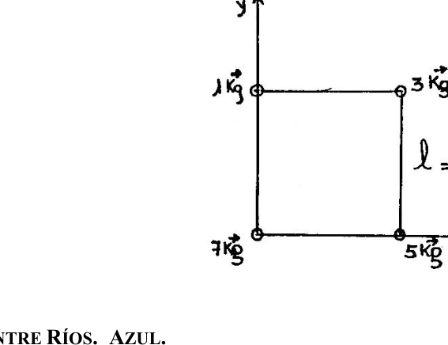
Topic: Rigid Body Statics Metodi: Vector Decomposition, Statistical Averaging Competenze: Physical Reasoning Objects: — Fonte: Testo (PDF) — p.2
Instanza locale - 16. Tra i Fiumi Azul
Le cime del quadrato sono successivamente messe in massa da 1 - 3 - 5 kg e 7 kg di peso. Trovare le coordinate del centro di gravità.
(Figura: quadrato con 1 Kg e 3 Kg in cima, 7 Kg e 5 Kg in cima, lato )
Topic: Rigid Body Statics Metodi: Vector Decomposition, Statistical Averaging Competenze: Physical Reasoning Objects: — Fonte: Testo (PDF) — p.2
The Commission shall adopt implementing acts in accordance with Article 21 of Regulation (EC) No 1272/2009. Between the Blue Rivers
The summits of the square are successively placed with a mass of 1 - 3 - 5 kg and 7 kg. Find the coordinates of the center of gravity.
(Figure: square with 1 Kg and 3 Kg at the top, 7 Kg and 5 Kg at the bottom, side )
Topic: Rigid Body Statics Metodi: Vector Decomposition, Statistical Averaging Competenze: Physical Reasoning Objects: — Fonte: Testo (PDF) — p.2
Instancia Local - 17. Entre Rios Azul
I) Sea un cuerpo prismatico de base cuadrangular cuyas medidas son: , , . Se pide calcular: a - Su area lateral. b - Su area total. c - Su volumen. II) Si lo suponemos sometido a una ; calcule: d - Su peso. e - Su densidad y peso especifico. III) Si comienza a tener un movimiento uniforme rectilineo durante 80 seg. Calcule: f - Su velocidad final, si recorrio Km durante ese lapso de tiempo. IV) Luego comienza a tener un movimiento variado durante 10 seg, calcule: g - Velocidad final y espacio, siendo su aceleracion . h - La fuerza actuante sobre el cuerpo en los tres sistemas. i - El trabajo realizado por el mismo en ese intervalo de tiempo. j - La energia potencial, energia cinetica y energia media desarrollada y contenida por el cuerpo. k - calcule su presion si la superficie sobre la que actua es de en los tres sistemas de unidades.
Topic: Newtonian Mechanics Metodi: Kinematic Equations, Dimensional Analysis Competenze: Physical Reasoning, Mathematical Modeling Objects: — Fonte: Testo (PDF) — p.2
Instanza locale - 17. Tra i Fiumi Azul
I) Si tratta di un corpo prismatico di base quadrangolare, le cui misure sono: , , . Si chiede di calcolare: a - La sua area laterale. b - La sua superficie totale. c - Il volume. II) Se si suppone che sia sottoposto a un , calcola: d - Il suo peso. e - densità e peso specifici. III) Se inizia a avere un movimento rettilineo uniforme per 80 seg. Calcola: f - La sua velocità finale, se percorro Km durante quel periodo di tempo. IV) Poi inizia a avere un movimento variabile per 10 secondi, calcola: g - velocità finale e spazio, con un’accelerazione . h - La forza che agisce sul corpo nei tre sistemi. i - Il lavoro svolto da lui in quel periodo. j - Energia potenziale, energia cinetica e energia media sviluppata e contenuta dal corpo. k - calcola la sua pressione se la superficie su cui opera è nei tre sistemi di unità.
Topic: Newtonian Mechanics Metodi: Kinematic Equations, Dimensional Analysis Competenze: Physical Reasoning, Mathematical Modeling Objects: — Fonte: Testo (PDF) — p.2
The Commission shall adopt implementing acts in accordance with Article 21 of Regulation (EC) No 1272/2009. Between the Blue Rivers
(i) It shall be a square base prismatic body measuring: , , . It is requested to calculate: a - Your side area. b - Its total area. c - Its volume. (ii) If we assume that it is subject to a , calculate: d - Its weight. e - Its specific density and weight. (iii) If you start to have a uniform straight line movement for 80 seconds. Calculate: f - Your final speed if I travel Km during that time. IV) Then start to have a varied movement for 10 seconds, calculate: g - End speed and space, with acceleration . h - The force acting on the body in all three systems. i - The work carried out by the same in that time interval. j - Potential energy, kinetic energy and medium energy developed and contained by the body. k - calculate its pressure if the surface on which it operates is in all three unit systems.
Topic: Newtonian Mechanics Metodi: Kinematic Equations, Dimensional Analysis Competenze: Physical Reasoning, Mathematical Modeling Objects: — Fonte: Testo (PDF) — p.2
Instancia Local - 18. Capital Federal Verde
En un planeta donde la aceleracion de la gravedad es de , se tiene un sistema como el que indica la figura A. Calcular la tension que ejerce la cuerda en el instante antes de soltar la masa de 1 Kg para que el resorte se comprima 0,5m.
(figura A)
Topic: Newtonian Mechanics Metodi: Free-Body Diagram, Hooke’s Law Competenze: Physical Reasoning Objects: Spring, Block, String, Pulley Fonte: Testo (PDF) — p.2
Instanza locale - 18. Capitale federale verde
Su un pianeta dove l’accelerazione della gravità è , si ha un sistema come quello indicato nella figura A. Calcolare la tensione che la corda esercita all’istante prima di rilasciare la massa di 1 Kg per comprimere la molla a 0,5 m.
(Figura A)
Topic: Newtonian Mechanics Metodi: Free-Body Diagram, Hooke’s Law Competenze: Physical Reasoning Objects: Spring, Block, String, Pulley Fonte: Testo (PDF) — p.2
The Commission shall adopt implementing acts in accordance with Article 18 of Regulation (EC) No 1272/2009. The amount of the loan is EUR 10 million.
On a planet where the acceleration of gravity is , you have a system like the one shown in Figure A. Calculate the tension exerted by the rope at the instant before releasing the mass of 1 Kg so that the spring is compressed to 0,5 m.
(Figure A)
Topic: Newtonian Mechanics Metodi: Free-Body Diagram, Hooke’s Law Competenze: Physical Reasoning Objects: Spring, Block, String, Pulley Fonte: Testo (PDF) — p.2
Instancia Local - 19. Capital Federal Azul
Un carrito de masa “m” desciende por los rieles de un plano inclinado AB y luego forma un bucle de radio “r”. Si se desprecia el rozamiento y se considera al carrito un cuerpo puntual: a) Desde que altura “h” debe descender el carrito sin velocidad inicial para que este pueda recorrer toda la circunferencia del bucle sin separarse de el. b) Determine la fuerza que hace el carrito sobre la pista circular en el punto M, para el cual el angulo NOM es "". C) Si ahora se abre el bucle en el tramo PM (es decir que no hay rieles en ese tramo), hallar la altura h desde la que debe descender el carrito sin velocidad inicial para que pueda recorrer todo el bucle, asi como el valor del angulo "" para el cual esta altura “h” es minima.
(figura)
Topic: Conservation of Energy, Newtonian Mechanics Metodi: Energy Conservation Method, Free-Body Diagram Competenze: Physical Reasoning Objects: Cart, Inclined Plane Fonte: Testo (PDF) — p.2
Instanza locale - 19. Capitale federale azzurro
Un carrello di massa “m” scende lungo i binari di un piano inclinato AB e poi forma un ciclo di radio “r”. Se si disprezza il ruggine e si considera il carrello un corpo puntuale: a) Da che altitudine “h” deve scendere il carrello senza velocità iniziale per poter percorrere l’intera circonferenza del ciclo senza separarsi dal suo. b) Determina la forza che il carrello fa sulla pista circolare al punto M, per il quale l’angolo NOM è ''. C) Se si apre ora il ciclo nel tratto PM (cioè non ci sono ferrovie in quel tratto), trovare l’altezza h da cui il carrello deve scendere senza velocità iniziale per poter percorrere l’intero ciclo, così come il valore dell’angolo "" per il quale questa altezza “h” è minima.
(Figura)
Topic: Conservation of Energy, Newtonian Mechanics Metodi: Energy Conservation Method, Free-Body Diagram Competenze: Physical Reasoning Objects: Cart, Inclined Plane Fonte: Testo (PDF) — p.2
The Commission shall adopt implementing acts in accordance with Article 21 of Regulation (EC) No 1272/2009. The amount of the loan shall be reported in the following table:
A “m” mass cart descends through the rails of an inclined plane AB and then forms a “r” radius loop. If the carriage is regarded as a pointed body, the carriage is not a carriage. (a) From which height ‘h’ the wagon must descend without initial speed so that it can travel the entire circumference of the loop without separating from it. (b) Determine the force exerted by the cart on the track at the point M for which the NOM angle is ''. C) If the loop is now opened in the PM section (i.e. there are no rails in that section), find the height h from which the cart must descend without initial speed so that it can travel the entire loop, as well as the value of the angle "" for which this height “h” is minima.
(Figure)
Topic: Conservation of Energy, Newtonian Mechanics Metodi: Energy Conservation Method, Free-Body Diagram Competenze: Physical Reasoning Objects: Cart, Inclined Plane Fonte: Testo (PDF) — p.2
Instancia Local - 20. Capital Federal Azul
Un cubo de madera de 20 cm de arista y de densidad se encuentra flotando en el agua. Si le introducimos 5cm mas por debajo de su posicion de equilibrio y lo dejamos libremente para que oscile: a) Calcular el periodo de oscilacion. b) Calcular la ecuacion de la velocidad en funcion del tiempo a partir del momento en que se deja libre para que oscile.
Topic: Oscillations & Waves, Fluid Mechanics Metodi: Simple Harmonic Motion Analysis, Hydrostatic Equilibrium Competenze: Physical Reasoning Objects: Block Fonte: Testo (PDF) — p.2
Instanza locale - 20. Capitale federale azzurro
Un cubo di legno di 20 cm di aristo e di densità è stato trovato galleggiando nell’acqua. Se lo mettiamo 5 cm più sotto la sua posizione di equilibrio e lo lasciamo oscillare liberamente: a) Calcolare il periodo di oscillazione. b) Calcolare l’equazione della velocità in funzione del tempo a partire dal momento in cui viene lasciato libero per oscillare.
Topic: Oscillations & Waves, Fluid Mechanics Metodi: Simple Harmonic Motion Analysis, Hydrostatic Equilibrium Competenze: Physical Reasoning Objects: Block Fonte: Testo (PDF) — p.2
The Commission shall adopt implementing acts in accordance with Article 21 of Regulation (EC) No 1272/2009. The amount of the loan shall be reported in the following table:
A wooden cube of 20 cm of edge and density is found floating in the water. If we insert it 5cm further below its equilibrium position and let it swing freely: (a) Calculate the period of oscillation. (b) Calculate the equation of the velocity in function of time from the moment it is left free to oscillate.
Topic: Oscillations & Waves, Fluid Mechanics Metodi: Simple Harmonic Motion Analysis, Hydrostatic Equilibrium Competenze: Physical Reasoning Objects: Block Fonte: Testo (PDF) — p.2
Instancia Local - 21. Cordoba Azul
Un canon antiaereo lanza una granada verticalmente con una velocidad de 500 m/s. Calcular a) La maxima altura que alcanzara la granada. b) El tiempo que empleara en alcanzar dicha altura. c) la velocidad instantanea al final de los 40 y 60 segundos. d) En que instantes pasara la granada por un punto situado a 10 Km de altura? Se desprecia la resistencia del aire.
Topic: Newtonian Mechanics Metodi: Kinematic Equations Competenze: Physical Reasoning Objects: Projectile Fonte: Testo (PDF) — p.2
Instanza locale - 21. Cordoba Azul
Un cannone antiaereo lancia una granata verticalmente a una velocità di 500 m/s. Calcolare a) La massima altezza raggiunta dalla granata. b) Il tempo necessario per raggiungere tale altezza. c) velocità istantanea alla fine dei 40 e 60 secondi. d) Qual è il momento in cui la granata è passata da un punto situato ad un’altezza di 10 km? Si disprezza la resistenza dell’aria.
Topic: Newtonian Mechanics Metodi: Kinematic Equations Competenze: Physical Reasoning Objects: Projectile Fonte: Testo (PDF) — p.2
The Commission shall adopt implementing acts in accordance with Article 21 of Regulation (EC) No 1272/2009. The following table shows the number of cases of the accident:
An anti-aircraft gun throws a grenade vertically at a speed of 500 m/s. Calculate a) The maximum height the grenade would reach. (b) The time it would take to reach that height. (c) the instantaneous speed at the end of 40 and 60 seconds. (d) How soon did the grenade pass through a point 10 km high? Air resistance is despised.
Topic: Newtonian Mechanics Metodi: Kinematic Equations Competenze: Physical Reasoning Objects: Projectile Fonte: Testo (PDF) — p.2
Instancia Local - 22. Cordoba Azul
Una bala de 15g se dispara con una velocidad de 300 m/s sobre un bloque de madera. Si la bala penetra en la madera 5 cm antes de detenerse. Calcular la fuerza de resistencia que ha ofrecido la madera.
Topic: Newtonian Mechanics, Conservation of Energy Metodi: Energy Conservation Method, Kinematic Equations Competenze: Physical Reasoning Objects: Projectile, Block Fonte: Testo (PDF) — p.2
Instanza locale - 22. Cordoba Azul
Una pallottola da 15g viene sparata a velocità di 300 m/s su un blocco di legno. Se la pallottola penetra nel legno 5 cm prima di fermarsi. Calcolare la forza di resistenza offerta dal legno.
Topic: Newtonian Mechanics, Conservation of Energy Metodi: Energy Conservation Method, Kinematic Equations Competenze: Physical Reasoning Objects: Projectile, Block Fonte: Testo (PDF) — p.2
The Commission shall adopt implementing acts in accordance with Article 22 of Regulation (EC) No 1272/2009. The following table shows the number of cases of the accident:
A 15g bullet is fired at a speed of 300 m/s over a block of wood. If the bullet penetrates the wood 5 cm before it stops. Calculate the strength of resistance that the wood has offered.
Topic: Newtonian Mechanics, Conservation of Energy Metodi: Energy Conservation Method, Kinematic Equations Competenze: Physical Reasoning Objects: Projectile, Block Fonte: Testo (PDF) — p.2
Instancia Local - 23. La Rioja Azul
De las estaciones A y B, distantes 160 Km, parten a la misma hora dos trenes: Uno de A hacia B y el otro de B hacia A, ambos a 40 Km/h. Un pajarito que esta sobre la locomotora en A, vuela en el instante de la partida hacia la que sale de B a razon de 60 Km/h, manteniendo esa direccion y sentido. Que distancia recorre el pajarito hasta el instante en que los trenes se cruzan?
Topic: Newtonian Mechanics Metodi: Kinematic Equations Competenze: Physical Reasoning Objects: — Fonte: Testo (PDF) — p.2
Instanza locale - 23. La Rioja Azul
Dalle stazioni A e B, distanti 160 Km, partono contemporaneamente due treni: uno da A a B e l’altro da B a A, entrambi a 40 Km/h. Un uccellino che è sulla locomotiva in A vola all’istante della partenza verso la quale esce da B a velocità di 60 Km/h, mantenendo quella direzione e direzione. Quanto lontano percorre l’uccello fino al momento in cui i treni si incrociano?
Topic: Newtonian Mechanics Metodi: Kinematic Equations Competenze: Physical Reasoning Objects: — Fonte: Testo (PDF) — p.2
The Commission shall adopt implementing acts in accordance with Article 21 of Regulation (EC) No 1272/2005. The Blue Rioja**
From the stations A and B, 160 km apart, two trains depart at the same time: one from A to B and the other from B to A, both at 40 km/h. A bird that is on the locomotive in A, flies at the moment of departure to which it leaves from B at a speed of 60 Km/h, maintaining that direction and direction. How far does the little bird travel to the moment the trains cross?
Topic: Newtonian Mechanics Metodi: Kinematic Equations Competenze: Physical Reasoning Objects: — Fonte: Testo (PDF) — p.2
Instancia Local - 24. La Rioja Azul
Se lanza una pelota de 200 gramos con una velocidad inicial de 25 metros/segundos formando un angulo de 53 grados hacia arriba respecto a la horizontal. 2.1. - Cual es la energia mecanica total inicialmente? 2.2. - En que punto de la trayectoria tiene energia cinetica minima? Cuanto vale? 2.3. - En que punto de la trayectoria tiene energia potencial maxima? Cuanto vale? 2.4. - Aplicando el principio de conservacion de la energia, hallar la altura maxima.
Topic: Conservation of Energy, Newtonian Mechanics Metodi: Energy Conservation Method, Kinematic Equations, Vector Decomposition Competenze: Physical Reasoning Objects: Projectile, Ball Fonte: Testo (PDF) — p.2
Instanza locale - 24. La Rioja Azul
Si lancia una palla di 200 grammi con una velocità iniziale di 25 metri/secondo formando un angolo di 53 gradi verso l’alto rispetto all’orizzontale. 2.1. - Qual è l’energia meccanica totale inizialmente? 2.2. - A che punto della traccia ha energia cinetica minima? - Quanto vale? 2.3. - A che punto della traccia ha la massima energia potenziale? - Quanto vale? 2.4. - Applicando il principio di conservazione dell’energia, trovare l’altezza massima.
Topic: Conservation of Energy, Newtonian Mechanics Metodi: Energy Conservation Method, Kinematic Equations, Vector Decomposition Competenze: Physical Reasoning Objects: Projectile, Ball Fonte: Testo (PDF) — p.2
The Commission shall adopt implementing acts in accordance with Article 21 of Regulation (EC) No 1224/2009. The Blue Rioja**
A 200-gram ball is thrown at an initial speed of 25 meters per second forming a 53-degree angle upwards from the horizontal. 2.1. - What’s the total mechanical energy initially? 2.2. - What point in the trajectory does it have minimum kinetic energy? How much is it worth? 2.3. - What point on the trajectory does it have maximum potential energy? How much is it worth? 2.4. - Applying the principle of energy conservation, find the maximum height.
Topic: Conservation of Energy, Newtonian Mechanics Metodi: Energy Conservation Method, Kinematic Equations, Vector Decomposition Competenze: Physical Reasoning Objects: Projectile, Ball Fonte: Testo (PDF) — p.2
Instancia Local - 25. Capital Federal Verde
Un cubo de madera de 10 cm de lado se encuentra dentro de un recipiente que contiene agua () y otro liquido () no miscibles. Si la cara inferior del cubo esta 2 cm debajo de la superficie entre los liquidos calcular la masa del cubo. ().
(figura)
Topic: Fluid Mechanics Metodi: Hydrostatic Equilibrium Competenze: Physical Reasoning Objects: Block, Container Fonte: Testo (PDF) — p.2
Instanza locale - 25. Capitale federale verde
Un cubo di legno di 10 cm laterale è all’interno di un recipiente contenente acqua () e un altro liquido () non miscibili. Se la parte inferiore del cubo è 2 cm sotto la superficie tra i liquidi, calcolare la massa del cubo. ().
(Figura)
Topic: Fluid Mechanics Metodi: Hydrostatic Equilibrium Competenze: Physical Reasoning Objects: Block, Container Fonte: Testo (PDF) — p.2
The Commission shall adopt implementing acts in accordance with Article 21 of Regulation (EC) No 1272/2009. The amount of the loan is EUR 10 million.
A 10 cm side wooden cube is contained within a container containing water () and other non-miscible liquid (). If the bottom side of the cube is 2 cm below the surface between the liquids calculate the mass of the cube. ().
(Figure)
Topic: Fluid Mechanics Metodi: Hydrostatic Equilibrium Competenze: Physical Reasoning Objects: Block, Container Fonte: Testo (PDF) — p.2
Instancia Local - 26. Capital Federal Verde
Un autito (despreciar el rozamiento y la masa de las ruedas) se suelta desde un altura H y luego salta por una rampa a de altura h H. Cual es la altura maxima que alcanza el autito durante el vuelo?
(figura)
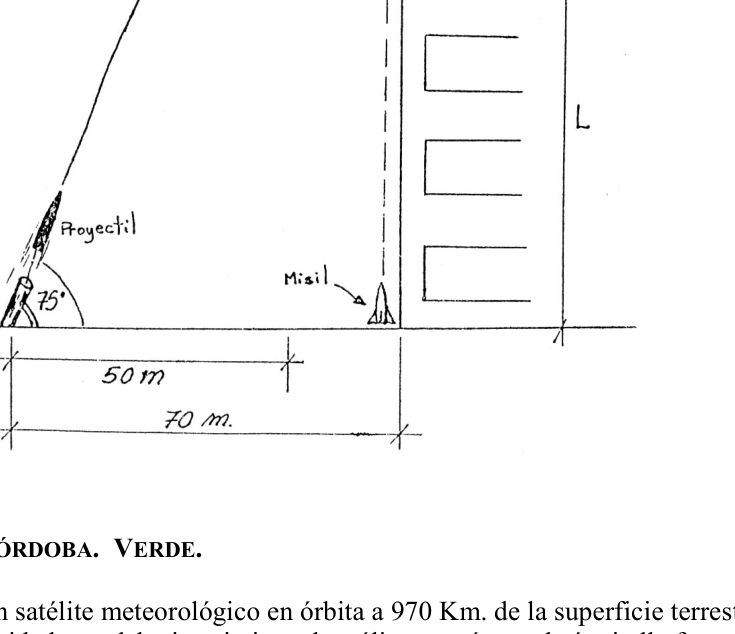
Topic: Conservation of Energy, Newtonian Mechanics Metodi: Energy Conservation Method, Kinematic Equations, Vector Decomposition Competenze: Physical Reasoning Objects: Cart, Inclined Plane Fonte: Testo (PDF) — p.2
Instanza locale - 26. Capitale federale verde
Un autito (sottopreparando il ruggine e la massa delle ruote) si solleva da un’altezza H e poi salta per un ramp a di altezza h H. Cual es la altura maxima que alcanza el autito durante el vuelo?
(Figura)
Topic: Conservation of Energy, Newtonian Mechanics Metodi: Energy Conservation Method, Kinematic Equations, Vector Decomposition Competenze: Physical Reasoning Objects: Cart, Inclined Plane Fonte: Testo (PDF) — p.2
Instancia Local - 26. Capital Federal Verde
Un autito (despreciar el rozamiento y la masa de las ruedas) se suelta desde un altura H y luego salta por una rampa a de altura h H. Cual es la altura maxima que alcanza el autito durante el vuelo?
(Figure)
Topic: Conservation of Energy, Newtonian Mechanics Metodi: Energy Conservation Method, Kinematic Equations, Vector Decomposition Competenze: Physical Reasoning Objects: Cart, Inclined Plane Fonte: Testo (PDF) — p.2
Instancia Local - 27. Junin, Mendoza Verde
Calcular la tension del cable y las fuerzas vertical y horizontal que actuan sobre el gozne de la grua de la figura.
(figura: grua con mastil, angulo de , brazo y peso P = 300 kg)
Topic: Rigid Body Statics Metodi: Torque & Angular Momentum Analysis, Free-Body Diagram, Vector Decomposition Competenze: Physical Reasoning Objects: Beam, String Fonte: Testo (PDF) — p.2
**Instanza locale - 27. Junin, Mendoza Verde
Calcolare la tensione del cavo e le forze verticali e orizzontali che agiscono sul giosso della gru della figura.
(Figura: gru con masto, angolo , braccio e peso P = 300 kg)
Topic: Rigid Body Statics Metodi: Torque & Angular Momentum Analysis, Free-Body Diagram, Vector Decomposition Competenze: Physical Reasoning Objects: Beam, String Fonte: Testo (PDF) — p.2
The Commission shall adopt implementing acts in accordance with Article 21 of Regulation (EC) No 1272/2009. The Commission has not yet adopted a proposal for a regulation.
Calculate the tension of the cable and the vertical and horizontal forces acting on the crane’s grip of the figure.
(Figure: crane with mast, angle , arm and weight P = 300 kg)
Topic: Rigid Body Statics Metodi: Torque & Angular Momentum Analysis, Free-Body Diagram, Vector Decomposition Competenze: Physical Reasoning Objects: Beam, String Fonte: Testo (PDF) — p.2
Instancia Local - 28. Junin, Mendoza Verde
Un cuerpo que pesa 10 Kg esta vinculado a un rotor por una varilla que forma con el mismo. Este rotor, inicialmente en reposo comienza a girar con aceleracion constante de . Calcular el tiempo necesario para que se corte la varilla despreciando su peso y estiramiento. Longitud de la varilla = 1 m Diametro de la varilla = 10 mm Resistencia de la varilla = 1000 .
Topic: Rotational Dynamics, Elasticity & Materials Metodi: Torque & Angular Momentum Analysis, Stress-Strain Analysis Competenze: Physical Reasoning Objects: Rod Fonte: Testo (PDF) — p.2
**Instanza locale - 28. Junin, Mendoza Verde
Un corpo di 10 Kg è legato a un rotore da un bastone che forma con esso. Questo rotore, inizialmente a riposo, inizia a girare con un’accelerazione costante di . Calcolare il tempo necessario per tagliare la bacchetta disprezzando il suo peso e la sua estensione. Lunghezza della canna = 1 m Diametro della canna = 10 mm Resistenza della canna = 1000 .
Topic: Rotational Dynamics, Elasticity & Materials Metodi: Torque & Angular Momentum Analysis, Stress-Strain Analysis Competenze: Physical Reasoning Objects: Rod Fonte: Testo (PDF) — p.2
The Commission shall adopt implementing acts in accordance with Article 21 of Regulation (EC) No 1272/2009. The Commission has not yet adopted a proposal for a regulation.
A body weighing 10 Kg is attached to a rotor by a rod forming with it. This rotor, initially at rest, starts to rotate at a constant acceleration of . Calculate the time it takes to cut the rod, disregarding its weight and stretch. The length of the rod = 1 m The diameter of the rod = 10 mm The resistance of the rod = 1000 .
Topic: Rotational Dynamics, Elasticity & Materials Metodi: Torque & Angular Momentum Analysis, Stress-Strain Analysis Competenze: Physical Reasoning Objects: Rod Fonte: Testo (PDF) — p.2
Instancia Local - 29. Jujuy Verde
Un objeto de corcho de se deja caer desde una altura de 5 m, sobre la superficie de un lago. Considerando que solo se opone a su movimiento el empuje del agua, calcular: a) La profundidad que se hunde el cuerpo en el agua. b) El tiempo que tarda en llegar a esa profundidad y volver a la superficie.
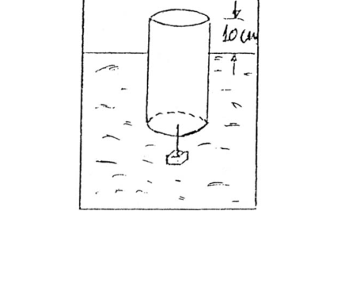
Topic: Fluid Mechanics, Newtonian Mechanics Metodi: Hydrostatic Equilibrium, Free-Body Diagram, Kinematic Equations Competenze: Physical Reasoning Objects: Block Fonte: Testo (PDF) — p.2
Instanza locale - 29. Giuggiolo Verde
Un oggetto di cork viene abbassato da un’altezza di 5 m, sopra la superficie di un lago. Considerando che il suo movimento è opposto solo alla spinta dell’acqua, calcolare: a) La profondità in cui il corpo si immerge nell’acqua. b) Il tempo necessario per raggiungere tale profondità e tornare in superficie.
Topic: Fluid Mechanics, Newtonian Mechanics Metodi: Hydrostatic Equilibrium, Free-Body Diagram, Kinematic Equations Competenze: Physical Reasoning Objects: Block Fonte: Testo (PDF) — p.2
The Commission shall adopt implementing acts in accordance with Article 21 of Regulation (EC) No 1295/2005. The following table shows the results of the evaluation:
A cork object of is dropped from a height of 5 m above the surface of a lake. Considering that only the water push is opposed to its movement, calculate: (a) The depth to which the body sinks in the water. (b) The time it takes to reach that depth and return to the surface.
Topic: Fluid Mechanics, Newtonian Mechanics Metodi: Hydrostatic Equilibrium, Free-Body Diagram, Kinematic Equations Competenze: Physical Reasoning Objects: Block Fonte: Testo (PDF) — p.2
Instancia Local - 30. Jujuy Verde
Dos bloques unidos por un cuerda que pasa por una pequena polea sin rozamiento, se mantiene en reposo sobre planos lisos.
(figura: bloque de 100 kg sobre plano a , bloque de 50 kg sobre plano a )
a) En que sentido se movera el sistema al ser liberado? b) Cual es la aceleracion de los bloques? c) Cual es la tension en la cuerda? d) Si los planos fueran rugosos, cambiaria el sentido del movimiento? e) Calcular la aceleracion si el coeficiente de roce es . f) Cuanto debe valer el coeficiente de roce para que los cuerpos se muevan con velocidad constante?
Topic: Newtonian Mechanics Metodi: Free-Body Diagram, Vector Decomposition Competenze: Physical Reasoning Objects: Block, String, Pulley, Inclined Plane Fonte: Testo (PDF) — p.2
Instanza locale - 30. Giuggiolo Verde
Due blocchi uniti da una corda che passa attraverso una piccola pollea senza rughe, si mantiene a riposo su piani lisci.
(Figura: blocco di 100 kg su piano a , blocco di 50 kg su piano a )
a) In che senso il sistema si muove quando viene liberato? b) Qual è l’accelerazione dei blocchi? c) Qual è la tensione della corda? d) Se le schede fossero rugose, cambierebbe il senso del movimento? e) Calcolare l’accelerazione se il coefficiente di rottura è . f) Quanto deve valere il coefficiente di rottura per muovere i corpi a velocità costante?
Topic: Newtonian Mechanics Metodi: Free-Body Diagram, Vector Decomposition Competenze: Physical Reasoning Objects: Block, String, Pulley, Inclined Plane Fonte: Testo (PDF) — p.2
The Commission shall adopt implementing acts in accordance with Article 21 of Regulation (EC) No 1272/2009. The following table shows the results of the evaluation:
Two blocks joined by a rope that passes through a small, unrusted pole, resting on smooth planes.
(Figure: 100 kg block on a plane to , 50 kg block on a plane to )
(a) In what sense did the system move upon being released? (b) What is the acceleration of the blocks? c) What is the tension on the rope? (d) If the planes were rough, would it change the direction of motion? (e) Calculate the acceleration if the brake coefficient is . (f) What is the coefficient of friction for bodies to move at a constant speed?
Topic: Newtonian Mechanics Metodi: Free-Body Diagram, Vector Decomposition Competenze: Physical Reasoning Objects: Block, String, Pulley, Inclined Plane Fonte: Testo (PDF) — p.2
Instancia Local - 31. Jujuy Verde
Una moneda colocada sobre un disco que gira a una velocidad constante de 78 rev/min. permanece en reposo respecto a este, cuando su distancia al eje es inferior a 7,5 cm. a) Cual es el coeficiente estatico de roce entre la moneda y el disco? b) A que distancia del eje puede colocar la moneda, sin que deslice, si el disco gira a 45 rev/min?
Topic: Rotational Dynamics, Newtonian Mechanics Metodi: Free-Body Diagram, Torque & Angular Momentum Analysis Competenze: Physical Reasoning Objects: Disk Fonte: Testo (PDF) — p.2
Instanza locale - 31. Giuggiolo Verde
Una moneta posta su un disco che ruota a velocità costante di 78 rv/min. rimane a riposo rispetto a quest’ultimo quando la sua distanza dall’asse è inferiore a 7,5 cm. a) Qual è il coefficiente di rottura statico tra moneta e disco? b) A che distanza dall’asse può essere posta la moneta, senza scivolare, se il disco ruota a 45 rv/min?
Topic: Rotational Dynamics, Newtonian Mechanics Metodi: Free-Body Diagram, Torque & Angular Momentum Analysis Competenze: Physical Reasoning Objects: Disk Fonte: Testo (PDF) — p.2
The Commission shall adopt implementing acts in accordance with Article 21 of Regulation (EC) No 1272/2001. The following table shows the results of the evaluation:
A coin placed on a disk that spins at a constant speed of 78 revolutions per minute. remains at rest with respect to the axle when its axis distance is less than 7,5 cm. (a) What is the static friction coefficient between the coin and the disc? (b) How far from the axis can the coin be placed without slipping if the disc rotates at 45 revolutions per minute?
Topic: Rotational Dynamics, Newtonian Mechanics Metodi: Free-Body Diagram, Torque & Angular Momentum Analysis Competenze: Physical Reasoning Objects: Disk Fonte: Testo (PDF) — p.2
Instancia Local - 32. Jujuy Azul
Un trozo de hielo resbala hacia abajo por una pendiente de en un tiempo doble del que tarda en resbalar por una pendiente de sin friccion. Cual es el coeficiente de friccion entre el hielo y el piso de la pendiente?
Topic: Newtonian Mechanics Metodi: Free-Body Diagram, Kinematic Equations Competenze: Physical Reasoning Objects: Block, Inclined Plane Fonte: Testo (PDF) — p.2
Instanza locale - 32. Giuggiolo Azul
Un pezzo di ghiaccio scivola giù per una pendice di in un tempo doppio rispetto al tempo necessario per scivolare per una pendice di senza attrito. Qual è il coefficiente di attrito tra il ghiaccio e il pavimento della pendenza?
Topic: Newtonian Mechanics Metodi: Free-Body Diagram, Kinematic Equations Competenze: Physical Reasoning Objects: Block, Inclined Plane Fonte: Testo (PDF) — p.2
The Commission shall adopt implementing acts in accordance with Article 21 of Regulation (EC) No 1272/2009. The following table shows the results of the evaluation:
A piece of ice slips down a slope of in twice the time it takes to slip down a slope of without friction. What is the friction coefficient between the ice and the floor of the slope?
Topic: Newtonian Mechanics Metodi: Free-Body Diagram, Kinematic Equations Competenze: Physical Reasoning Objects: Block, Inclined Plane Fonte: Testo (PDF) — p.2
Instancia Local - 33. Jujuy Azul
Un recipiente cilindrico de 20 cm de diametro flota en el agua emergiendo 10 cm de la superficie libre, cuando de su fondo se cuelga un bloque de hierro de 10 Kgr. Si el bloque de hierro se coloca ahora dentro del recipiente. Cual sera la altura que emerge? siendo 7,8 el peso especifico del hierro.
(figura)
Topic: Fluid Mechanics Metodi: Hydrostatic Equilibrium Competenze: Physical Reasoning Objects: Cylinder, Container, Block Fonte: Testo (PDF) — p.2
Instanza locale - 33. Giuggiolo Azul
Un recipiente cilindrico di 20 cm di diametro galleggia nell’acqua emergendo 10 cm dalla superficie libera, quando dal fondo è appeso un blocco di ferro di 10 Kgr. Se il blocco di ferro viene inserito dentro il recipiente. Qual è l’altezza che emerge? 7,8 è il peso specifico del ferro.
(Figura)
Topic: Fluid Mechanics Metodi: Hydrostatic Equilibrium Competenze: Physical Reasoning Objects: Cylinder, Container, Block Fonte: Testo (PDF) — p.2
The Commission shall adopt implementing acts in accordance with Article 21 of Regulation (EC) No 1272/2009. The following table shows the results of the evaluation:
A cylindrical vessel of 20 cm in diameter floats in water emerging 10 cm from the free surface when a block of iron of 10 Kgr is suspended from its bottom. If the iron block is now placed inside the container. What’s the height that’s gonna come up? The specific weight of the iron is 7,8 .
(Figure)
Topic: Fluid Mechanics Metodi: Hydrostatic Equilibrium Competenze: Physical Reasoning Objects: Cylinder, Container, Block Fonte: Testo (PDF) — p.2
Instancia Local - 34. Jujuy Verde
Un hombre que corre tiene la mitad de la energia cinetica que tiene un muchacho cuya masa es la mitad de la suya. El hombre aumenta su velocidad en 1 m/s y entonces tiene la misma energia cinetica que el muchacho. Cuales eran las velocidades iniciales del hombre y del muchacho?
Topic: Conservation of Energy Metodi: Energy Conservation Method Competenze: Physical Reasoning, Mathematical Modeling Objects: — Fonte: Testo (PDF) — p.2
Instanza locale - 34. Giuggiolo Verde
Un uomo che corre ha metà dell’energia cinetica di un ragazzo che ha metà di massa. L’uomo aumenta la sua velocità di 1 m/s e quindi ha la stessa energia cinetica del ragazzo. Quali erano le velocità iniziali dell’uomo e del ragazzo?
Topic: Conservation of Energy Metodi: Energy Conservation Method Competenze: Physical Reasoning, Mathematical Modeling Objects: — Fonte: Testo (PDF) — p.2
The Commission shall adopt implementing acts in accordance with Article 21 of Regulation (EC) No 1272/2009. The following table shows the results of the evaluation:
A man who runs has half the kinetic energy of a boy whose mass is half his own. The man increases his speed by 1 m/s and then he has the same kinetic energy as the boy. What were the initial speeds of the man and the boy?
Topic: Conservation of Energy Metodi: Energy Conservation Method Competenze: Physical Reasoning, Mathematical Modeling Objects: — Fonte: Testo (PDF) — p.2
Instancia Local - 35. Rio Segundo, Cordoba Verde
Un grupo de espionaje quiere destruir un edificio del gobierno que tiene una altura L, para ello lanza un proyectil desde una distancia de 70 m. con una velocidad que forma con la horizontal un angulo ; se conoce que la mitad del alcance del proyectil es de 50 m. El edificio del gobierno cuenta con un dispositivo de seguridad en su base, que lanza un misil, no guiado, en forma vertical, que puede destruir cualquier proyectil que se cruce en su camino. (a) Calcula la con que debe lanzarse el proyectil, para que impacte como lo indica la figura. (b) Calcula la altura L del edificio. (c) Sabemos que el misil fue accionado 4,5 s. despues del lanzamiento del proyectil (siendo el movimiento del misil rectilineo uniformemente acelerado) con . Se lograra salvar el edificio?. Suponga que el proyectil y el misil se mueven en un mismo plano.
(figura)
Topic: Newtonian Mechanics Metodi: Kinematic Equations, Vector Decomposition Competenze: Physical Reasoning Objects: Projectile Fonte: Testo (PDF) — p.2
Instanza locale - 35. Rio Segundo, Cordoba Verde
Un gruppo di spionaggio vuole distruggere un edificio del governo che ha un’altezza L, per questo lancia un proiettile da una distanza di 70 metri. con velocità che forma orizzontalmente un angolo ; è noto che la metà del raggio di raggiungimento del proiettile è di 50 m. L’edificio del governo ha un dispositivo di sicurezza alla base, che lancia un missile, non guidato, in forma verticale, che può distruggere qualsiasi proiettile che si incrocia nel suo cammino. (a) Calcola il con cui il proiettile deve essere lanciato, per impattare come indicato nella figura. b) Calcola l’altezza L dell’edificio. (c) Sappiamo che il missile è stato attivato per 4,5 secondi. dopo il lancio del proiettile (se il movimento del missile rettilineo è uniformemente accelerato) con . Se lograra salvar el edificio?. Supponiamo che il proiettile e il missile si muovano nello stesso piano.
(Figura)
Topic: Newtonian Mechanics Metodi: Kinematic Equations, Vector Decomposition Competenze: Physical Reasoning Objects: Projectile Fonte: Testo (PDF) — p.2
Instancia Local - 35. Rio Segundo, Cordoba Verde
A spy group wants to destroy an L-height government building, so it launches a projectile from a distance of 70 meters. with a speed that horizontally forms an angle ; half the projectile range is known to be 50 m. The government building has a security device at its base, which launches an unguided missile, vertically, that can destroy any projectile that crosses its path. (a) Calculate the with which the projectile must be launched, so that it impacts as indicated in the figure. (b) Calculate the height L of the building. We know the missile was fired 4.5 seconds. after the projectile is launched (with the straight-line missile moving uniformly accelerated) with . Se lograra salvar el edificio?. Suppose the projectile and the missile move in the same plane.
(Figure)
Topic: Newtonian Mechanics Metodi: Kinematic Equations, Vector Decomposition Competenze: Physical Reasoning Objects: Projectile Fonte: Testo (PDF) — p.2
Instancia Local - 36. Rio Segundo, Cordoba Verde
Se desea colocar un satelite meteorologico en orbita a 970 Km. de la superficie terrestre. (a) Calcula la velocidad que debe imprimirse al satelite. que sucederia si ella fuese menor que el valor encontrado, y si fuese mayor?. (b) Elige la opcion correcta; y justifica con tus calculos. El periodo del satelite es: horas; dias; minutos (c) Suponga que el satelite se encuentra en orbita sobre el ecuador de la Tierra, a la altura indicada; si un observador viese pasar ese satelite sobre su cabeza en un instante dado. Despues de que tiempo volveria a suceder esto?, habria mas de una posibilidad?. Datos:
Topic: Gravitation Metodi: Newton’s Law of Gravitation, Kepler’s Laws Competenze: Physical Reasoning Objects: Satellite, Planet Fonte: Testo (PDF) — p.2
Instanza locale - 36. Rio Segundo, Cordoba Verde
Si desidera posizionare un satellite meteorologico in orbita a 970 Km. della superficie terrestre. (a) Calcola la velocità da stampare sul satellite. que sucederia si ella fuese menor que el valor encontrado, y si fuese mayor?. (b) Scegli l’opzione giusta; e giustifica con i tuoi calcoli. Il periodo del satellite è: ore; giorni; minuti (c) Supponiamo che il satellite sia in orbita sull’equatore terrestre, all’altezza indicata; se un osservatore vedesse quel satellite passare sopra la sua testa in un dato istante. Despues de que tiempo volveria a suceder esto?, habria mas de una posibilidad?. Dati:
Topic: Gravitation Metodi: Newton’s Law of Gravitation, Kepler’s Laws Competenze: Physical Reasoning Objects: Satellite, Planet Fonte: Testo (PDF) — p.2
Instancia Local - 36. Rio Segundo, Cordoba Verde
A meteorological satellite is to be placed in orbit at 970 km. of the earth’s surface. (a) Calculate the speed to be printed on the satellite. que sucederia si ella fuese menor que el valor encontrado, y si fuese mayor?. (b) Choose the correct option; and justify it with your calculations. The period of the satellite is: horas; dias; minutos (c) Suppose the satellite is in orbit above the Earth’s equator at the indicated altitude; if an observer saw that satellite pass over his head at a given moment. Despues de que tiempo volveria a suceder esto?, habria mas de una posibilidad?. The data:
Topic: Gravitation Metodi: Newton’s Law of Gravitation, Kepler’s Laws Competenze: Physical Reasoning Objects: Satellite, Planet Fonte: Testo (PDF) — p.2
Instancia Local - 37. Mar del Plata, Buenos Aires Azul
Para el caso de la figura, calcular que es lo que indicaria el dinamometro en esa situacion.
(figura: bloque de 2 Kg sobre plano inclinado a , dinamometro de masa nula, fuerza F = 2,5 N, masa colgante de 2 Kg)
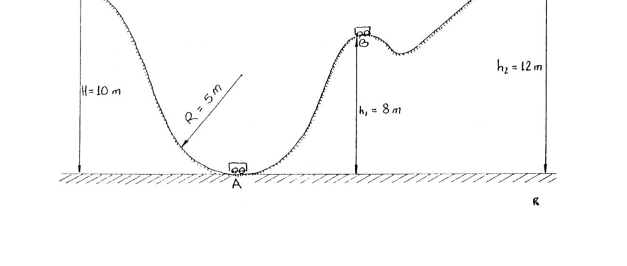
Topic: Newtonian Mechanics Metodi: Free-Body Diagram, Vector Decomposition Competenze: Physical Reasoning Objects: Block, Inclined Plane, Pulley, String Fonte: Testo (PDF) — p.2
Instanza locale - 37. Mar del Plata, Buenos Aires Azul
Per il caso della figura, calcolare ciò che il dinamometro indicherebbe in quella situazione.
(Figura: blocco di 2 Kg su piano inclinato a , dinamometro di massa zero, forza F = 2,5 N, massa pendente di 2 Kg)
Topic: Newtonian Mechanics Metodi: Free-Body Diagram, Vector Decomposition Competenze: Physical Reasoning Objects: Block, Inclined Plane, Pulley, String Fonte: Testo (PDF) — p.2
The Commission shall adopt implementing acts in accordance with Article 21 of Regulation (EC) No 1272/2009. The Commission has also adopted a proposal for a regulation on the protection of the environment.
For the case of the figure, calculate what the dynamometer would indicate in that situation.
(Figure: 2 Kg block on a plane inclined to , dynamometer with zero mass, force F = 2,5 N, suspended mass 2 Kg)
Topic: Newtonian Mechanics Metodi: Free-Body Diagram, Vector Decomposition Competenze: Physical Reasoning Objects: Block, Inclined Plane, Pulley, String Fonte: Testo (PDF) — p.2
Instancia Local - 38. Mar del Plata, Buenos Aires Azul
Dos moviles se desplazan en sentido contrario por un camino recto. El movil A arranca desde el punto 1 cuando el reloj da las 9 hs. y avanza con aceleracion hasta las 9 hs. 15 min; luego continua con velocidad constante. El movil B se desplaza hacia A con velocidad constante de 72 Km/h, y pasa por un punto 2 situado a 2000 Km de 1 cuando el reloj marca las 10.30 hs. Calcular la posicion y la hora que marca el reloj, cuando se encuentran.
Topic: Newtonian Mechanics Metodi: Kinematic Equations Competenze: Physical Reasoning Objects: — Fonte: Testo (PDF) — p.2
Instanza locale - 38. Mar del Plata, Buenos Aires Azul
Due motori si spostano in direzione opposta per un sentiero retto. Il motore A parte dal punto 1 quando il orologio fa 9 ore. e si avanza con fino alle 9 h. 15 minuti, poi continua a velocità costante. Il motore B si muove verso A a velocità costante di 72 Km/h, e passa attraverso un punto 2 situato a 2000 Km di 1 quando l’orologio marca le 10.30 hs. Calcolare la posizione e l’ora che il orologio segna, quando si trovano.
Topic: Newtonian Mechanics Metodi: Kinematic Equations Competenze: Physical Reasoning Objects: — Fonte: Testo (PDF) — p.2
The Commission shall adopt implementing acts in accordance with Article 21 of Regulation (EC) No 1272/2009. The Commission has also adopted a proposal for a regulation on the protection of the environment.
Two movements move in the opposite direction along a straight path. The A-movement starts from point 1 when the clock goes off at 9 o’clock. and accelerates to 9 h. 15 minutes; then continue at a constant speed. The B-movement moves towards A at a constant speed of 72 Km/h, and passes through a point 2 located at 2000 Km of 1 when the clock is at 10.30 hs. Calculate the position and time of the clock when they meet.
Topic: Newtonian Mechanics Metodi: Kinematic Equations Competenze: Physical Reasoning Objects: — Fonte: Testo (PDF) — p.2
Instancia Local - 39. Mar del Plata, Buenos Aires Azul
Un carro, de masa m = 100 Kg, se desplaza por la montana rusa sin rozamiento . a) Calcular la velocidad del carro cuando pasa por los puntos A, B y C. b) Cuanto vale la fuerza normal que el riel ejerce sobre el carro cuando pasa por el punto A?
(figura: , altura , radio en A, , en C)
Topic: Conservation of Energy, Newtonian Mechanics Metodi: Energy Conservation Method, Free-Body Diagram Competenze: Physical Reasoning Objects: Cart Fonte: Testo (PDF) — p.2
Instanza locale - 39. Mar del Plata, Buenos Aires Azul
Un carro, di massa m = 100 Kg, si muove sulla montagna russa senza rottura. a) Calcolare la velocità del carro quando passa attraverso i punti A, B e C. b) Qual è la forza normale che il binario esercita sul carro quando passa attraverso il punto A?
(Figura: , altezza , radio in A, , in C)
Topic: Conservation of Energy, Newtonian Mechanics Metodi: Energy Conservation Method, Free-Body Diagram Competenze: Physical Reasoning Objects: Cart Fonte: Testo (PDF) — p.2
The Commission shall adopt implementing acts in accordance with Article 21 of Regulation (EC) No 1272/2009. The Commission has also adopted a proposal for a regulation on the protection of the environment.
A car, m = 100 kg, moves through the Russian mountains without a scratch. (a) Calculate the speed of the car when passing through points A, B and C. (b) What is the normal force exerted by the railway on the wagon when passing through point A?
(Figure: , height , radius in A, , in C)
Topic: Conservation of Energy, Newtonian Mechanics Metodi: Energy Conservation Method, Free-Body Diagram Competenze: Physical Reasoning Objects: Cart Fonte: Testo (PDF) — p.2
Instancia Local - 40. Mar del Plata, Buenos Aires Azul
Una palangana llena de agua esta apoyada en equilibrio sobre un soporte. Si colocamos un bloque de madera, como indica la figura, se cae la palangana? - Justificar la respuesta.
(figura)
Topic: Fluid Mechanics, Rigid Body Statics Metodi: Hydrostatic Equilibrium, Torque & Angular Momentum Analysis Competenze: Physical Reasoning Objects: Container, Block Fonte: Testo (PDF) — p.2
Instanza locale - 40. Mar del Plata, Buenos Aires Azul
Una vasca piena di acqua è appoggiata in equilibrio su un supporto. Se mettiamo un blocco di legno, come indica la figura, la pianta cade? - Giustificare la risposta.
(Figura)
Topic: Fluid Mechanics, Rigid Body Statics Metodi: Hydrostatic Equilibrium, Torque & Angular Momentum Analysis Competenze: Physical Reasoning Objects: Container, Block Fonte: Testo (PDF) — p.2
The Commission shall adopt implementing acts in accordance with Article 21 of Regulation (EC) No 1272/2009. The Commission has also adopted a proposal for a regulation on the protection of the environment.
A water-filled plunge is rested in balance on a support. If we put a block of wood, as shown in the figure, does the plinth fall? - Justify the answer.
(Figure)
Topic: Fluid Mechanics, Rigid Body Statics Metodi: Hydrostatic Equilibrium, Torque & Angular Momentum Analysis Competenze: Physical Reasoning Objects: Container, Block Fonte: Testo (PDF) — p.2
Instancia Local - 41. Rosario, Santa Fe Verde
El bote de la figura pesa 50 Kgf, y por razones de seguridad no es conveniente que su borde este a menos de 35 cm de la superficie del agua. Cuantas personas de 80 Kgf de peso pueden ocupar el bote.
(figura: bote de dimensiones 2,5 m x 1 m x 0,5 m, base 2 m)
Topic: Fluid Mechanics Metodi: Hydrostatic Equilibrium Competenze: Physical Reasoning Objects: Container Fonte: Testo (PDF) — p.2
La Commissione ha adottato una decisione del Consiglio. Rosario, Santa Fe Verde**
Il pesante della barca è di 50 Kgf e per motivi di sicurezza non è opportuno che il suo bordo sia a meno di 35 cm dalla superficie dell’acqua. Quante persone di 80 Kgf possono occupare la barca.
(Figura: barca di dimensioni 2,5 m x 1 m x 0,5 m, base 2 m)
Topic: Fluid Mechanics Metodi: Hydrostatic Equilibrium Competenze: Physical Reasoning Objects: Container Fonte: Testo (PDF) — p.2
The Commission shall adopt implementing acts in accordance with Article 21 of Regulation (EC) No 1272/2009. The Commission shall adopt implementing acts in accordance with Article 21 of this Regulation.
The figure boat weighs 50 Kgf, and for safety reasons it is not appropriate for its edge to be less than 35 cm from the water surface. How many people weighing 80 kgf can take the boat?
(Figure: boat of dimensions 2,5 m x 1 m x 0,5 m, base 2 m)
Topic: Fluid Mechanics Metodi: Hydrostatic Equilibrium Competenze: Physical Reasoning Objects: Container Fonte: Testo (PDF) — p.2
Instancia Local - 42. Rosario, Santa Fe Verde
Mida la distancia correspondiente a cada intervalo en la figura. (a) Cual es la velocidad en cada intervalo? (b) Cuales son los cambios de velocidad en cada intervalo? (c) Cual es la aceleracion en cada intervalo?
(figura: regla numerada de 1 a 16 con puntos a intervalos crecientes. El intervalo de tiempo entre cada “medicion” de la posicion es de s.)
Topic: Newtonian Mechanics Metodi: Kinematic Equations, Experimental Data Analysis Competenze: Physical Reasoning, Experimental Data Analysis Objects: — Fonte: Testo (PDF) — p.2
Instanza locale - 42. Rosario, Santa Fe Verde
Misura la distanza corrispondente a ciascun intervallo nella figura. (a) Qual è la velocità in ogni intervallo? (b) Quali sono i cambiamenti di velocità in ogni intervallo? (c) Qual è l’accelerazione in ogni intervallo?
(Figura: regola numerata da 1 a 16 con punti a crescenti intervalli. L’intervallo di tempo tra ogni “misura” della posizione è di s.)
Topic: Newtonian Mechanics Metodi: Kinematic Equations, Experimental Data Analysis Competenze: Physical Reasoning, Experimental Data Analysis Objects: — Fonte: Testo (PDF) — p.2
The Commission shall adopt implementing acts in accordance with Article 21 of Regulation (EC) No 1272/2009. The Commission shall adopt implementing acts in accordance with Article 21 of this Regulation.
Measure the distance for each interval in the figure. (a) What is the speed at each interval? (b) What are the speed changes at each interval? (c) What is the acceleration at each interval?
(Figure: numbered rule from 1 to 16 with increasing intervals of points. The time interval between each “measurement” of the position is s.)
Topic: Newtonian Mechanics Metodi: Kinematic Equations, Experimental Data Analysis Competenze: Physical Reasoning, Experimental Data Analysis Objects: — Fonte: Testo (PDF) — p.2
Instancia Local - 43. Capital Federal Verde
Al masa de los cuerpos y es de 1 kg y la aceleracion de sistema es de hacia la derecha, calcular .
(figura: sistema de tres masas con poleas, sobre mesa, y colgantes)
Se considera el mismo sistema, pero ahora con el cuerpo completamente sumergido en un liquido de densidad , la aceleracion del sistema pasa a ser de en el mismo sentido. Teniendo en cuenta que el cuerpo esta construido de oro y plata. Determinar que proporcion guardan las masas de oro y plata. (Densidad oro = , densidad plata = )
Topic: Newtonian Mechanics, Fluid Mechanics Metodi: Free-Body Diagram, Hydrostatic Equilibrium Competenze: Physical Reasoning Objects: Block, Pulley, String Fonte: Testo (PDF) — p.2
Instanza locale - 43. Capitale federale verde
Al massaggio dei corpi e è di 1 kg e l’accelerazione del sistema è di a destra, calcolare .
(Figura: sistema a tre masse con pollice, su tavolo, e appenditori)
Si considera lo stesso sistema, ma ora con il corpo completamente immerso in un liquido di densità , l’accelerazione del sistema passa a essere di nello stesso senso. Considerando che il corpo è costruito in oro e argento. Determinare quale proporzione custodisce le masse d’oro e d’argento. (densività oro = , densità argento = )
Topic: Newtonian Mechanics, Fluid Mechanics Metodi: Free-Body Diagram, Hydrostatic Equilibrium Competenze: Physical Reasoning Objects: Block, Pulley, String Fonte: Testo (PDF) — p.2
The Commission shall adopt implementing acts in accordance with Article 21 of Regulation (EC) No 1272/2009. The amount of the loan is EUR 10 million.
The mass of the and bodies is 1 kg and the system acceleration is to the right, calculate .
(Figure: three-member system with pulleys, on table, and hangers)
It is considered the same system, but now with the body completely submerged in a density liquid , the acceleration of the system becomes in the same direction. Considering the body is made of gold and silver. Determine what proportion holds the gold and silver masses. (Gold density = , silver density = )
Topic: Newtonian Mechanics, Fluid Mechanics Metodi: Free-Body Diagram, Hydrostatic Equilibrium Competenze: Physical Reasoning Objects: Block, Pulley, String Fonte: Testo (PDF) — p.2
Instancia Local - 44. Cordoba Azul
Dos pequenos pendulos electricos estan sujetos del mismo punto y sus respectivos hilos de suspension, de masa despreciable, son de la misma longitud, de tal forma que ambas esferas estan en contacto. Se cargan los dos con la misma carga, repeliendose hasta que los hilos de ambos pendulos forman un angulo de . Determinar que fraccion de la carga original han perdido cuando el angulo entre ambos se reduce a .
Topic: Electrostatics Metodi: Coulomb’s Law, Free-Body Diagram, Vector Decomposition Competenze: Physical Reasoning Objects: Pendulum, Point Charge Fonte: Testo (PDF) — p.2
Instanza locale - 44. Cordoba Azul
Due piccoli penduli elettrici sono soggetti allo stesso punto e i loro rispettivi fili di sospensione, di massa sconsiderata, sono della stessa lunghezza, in modo che le due sfere sono in contatto. Entrambi si caricano con la stessa carica, rinviandosi fino a che le fili di entrambi i pendoli formano un angolo di . Determinare quale frazione della carica originale è stata persa quando l’angolo tra i due è ridotto a .
Topic: Electrostatics Metodi: Coulomb’s Law, Free-Body Diagram, Vector Decomposition Competenze: Physical Reasoning Objects: Pendulum, Point Charge Fonte: Testo (PDF) — p.2
The Commission shall adopt implementing acts in accordance with Article 21 of Regulation (EC) No 1272/2009. The following table shows the number of cases of the accident:
Two small electric pendulums are subject to the same point and their respective suspension threads, of despicable mass, are of the same length, so that both spheres are in contact. The two are loaded with the same load, reversing until the threads of both pendulums form an angle of . Determine which fraction of the original load has been lost when the angle between the two is reduced to .
Topic: Electrostatics Metodi: Coulomb’s Law, Free-Body Diagram, Vector Decomposition Competenze: Physical Reasoning Objects: Pendulum, Point Charge Fonte: Testo (PDF) — p.2
Instancia Local - 45. Mendoza Azul
Dos alumnos disponen de tres resistencias y una bateria, la conectan segun la figura. Pero ahora no saben calcular la energia calorica que disipa la resistencia R3, ni cuantos KW-H consume el circuito, durante las 3 horas de funcionamiento. Podrias ayudarlos? R1 = 2 OHM R2 = 1,5 OHM R3 = 1 OHM F.E.M. = 15 VOLTIOS r = 0,01 ohm
(figura)
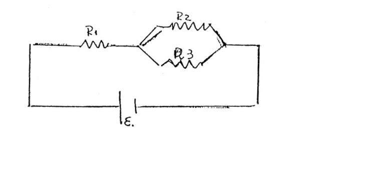
Topic: Circuits Metodi: Equivalent Circuit Reduction, Kirchhoff’s Laws Competenze: Physical Reasoning Objects: Resistor, Battery Fonte: Testo (PDF) — p.2
Instanza locale - 45. Mendoza Azul
Due studenti hanno tre resistenze e una batteria, la collegano secondo la figura. Ma ora non sanno calcolare l’energia calorica che dissipa la resistenza R3, né quanti KW-H consumano il circuito, durante le 3 ore di funzionamento. Podrias ayudarlos? R1 = 2 OHM R2 = 1,5 OHM R3 = 1 OHM F.E.M. = 15 VOLTI R = 0,01 ohm
(Figura)
Topic: Circuits Metodi: Equivalent Circuit Reduction, Kirchhoff’s Laws Competenze: Physical Reasoning Objects: Resistor, Battery Fonte: Testo (PDF) — p.2
Instancia Local - 45. Mendoza Azul
Two students have three resistors and a battery, they connect it according to the figure. But now they can’t calculate the calorie energy that dissipates R3 resistance, or how many KW-H the circuit consumes, during the three hours of operation. Podrias ayudarlos? R1 = 2 OHM R2 = 1,5 OHM R3 = 1 OHM F.E.M. The value of the underlying load The following is the list of the following:
(Figure)
Topic: Circuits Metodi: Equivalent Circuit Reduction, Kirchhoff’s Laws Competenze: Physical Reasoning Objects: Resistor, Battery Fonte: Testo (PDF) — p.2
Instancia Local - 46. Entre Rios Azul
En un domicilio se quiere calcular, estimativamente, el consumo de energia electrica mensual (en Kw h) y la intensidad de cada artefacto (en A); teniendo en cuenta los siguientes datos: ARTEFACTOS / POTENCIA / TIEMPO DE USO DIARIO Heladera / 200 w / 10 hs. televisor / 85 w / 6 hs. estufa / 800 w / 1 h. plancha / 750 w / 10 min. lamparas / 25w (2)-40w(2)-75w(1) / 6 hs. radio / 4 w / 4 hs. lavarropas / 185 w / 30 min. secarropas / 200 w / 45 min. video juego / 4 w / 2 hs. batidora / 100 w / 10 min. licuadora / 100 w / 5 min.
Topic: Circuits Metodi: Equivalent Circuit Reduction, Order-of-Magnitude Estimation Competenze: Physical Reasoning Objects: — Fonte: Testo (PDF) — p.2
Instanza locale - 46. Tra i Fiumi Azul
In una casa si vuole calcolare, in misura stimata, il consumo di energia elettrica mensile (in Kw h) e l’intensità di ogni dispositivo (in A); tenendo conto dei seguenti dati: Artefatti / Potenza / Tempo di utilizzo giornaliero Geladura / 200 w / 10 hs. TV / 85 w / 6 ore. stufa / 800 w / 1 h. la lamina / 750 w / 10 min. lampadine / 25w (2)-40w(2)-75w(1) / 6 hs. radio / 4 w / 4 hs. lavanderia / 185 w / 30 min. secchi 200 w / 45 min. video game / 4 w / 2 hs. battente / 100 w / 10 min. liquidatore / 100 w / 5 min.
Topic: Circuits Metodi: Equivalent Circuit Reduction, Order-of-Magnitude Estimation Competenze: Physical Reasoning Objects: — Fonte: Testo (PDF) — p.2
The Commission shall adopt implementing acts in accordance with Article 21 of Regulation (EC) No 1272/2009. Between the Blue Rivers
In a home, the estimated monthly electricity consumption (in Kw h) and the intensity of each device (in A) is to be calculated, taking into account the following data: Artifacts / Potential / Time of use Freezer / 200 w / 10 hs. TV / 85 w / 6 hs. The heat is 800 w / 1 h. The following table shows the following: The following shall be reported: Radio / 4 w / 4 hs. Washing clothes / 185 w / 30 min. Dry drops / 200 w / 45 min. Video game / 4 w / 2 hs. The beater / 100 w / 10 min. Liquidator / 100 w / 5 min.
Topic: Circuits Metodi: Equivalent Circuit Reduction, Order-of-Magnitude Estimation Competenze: Physical Reasoning Objects: — Fonte: Testo (PDF) — p.2
Instancia Local - 47. Capital Federal Azul
En el siguiente circuito todas las lamparas son iguales de 40W/220v y S1, S2, S3 y S4 con interruptores que pueden estar en la posicion de cerrados o abiertos. Los cables de conexion se considera con resistencia electrica despreciable. Para cada una de las siguientes cuestiones, indicar que interruptores deben estar cerrados y abiertos, que lamparas estan encendidas y apagadas y que indicara el amperimetro en cada caso. a) Se desea encender solo una lampara. b) Se desea encender solo 4 lamparas.
(figura)
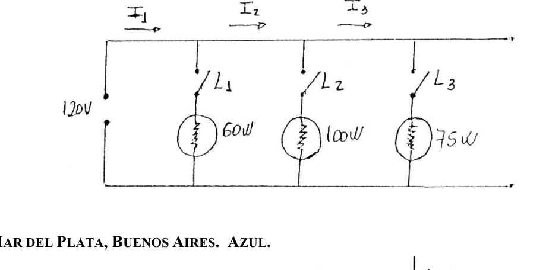
Topic: Circuits Metodi: Equivalent Circuit Reduction, Kirchhoff’s Laws Competenze: Physical Reasoning Objects: Resistor, Switch, Galvanometer Fonte: Testo (PDF) — p.2
Instanza locale - 47. Capitale federale azzurro
Nel circuito successivo tutte le lampade sono uguali di 40W/220v e S1, S2, S3 e S4 con interruttori che possono essere in posizione chiusa o aperta. I cavi di connessione sono considerati con una resistenza elettrica scarsa. Per ciascuna delle seguenti domande, indicare che interruttori devono essere chiusi e aperti, che lampade sono accese e spente e indicare l’ampiezzatore in ogni caso. a) Si desidera accendere solo una lampada. b) Si desiderano accendere solo 4 lampade.
(Figura)
Topic: Circuits Metodi: Equivalent Circuit Reduction, Kirchhoff’s Laws Competenze: Physical Reasoning Objects: Resistor, Switch, Galvanometer Fonte: Testo (PDF) — p.2
The Commission shall adopt implementing acts in accordance with Article 21 of Regulation (EC) No 1272/2009. The amount of the loan shall be reported in the following table:
In the following circuit all lamps are equal 40W/220v and S1, S2, S3 and S4 with switches that can be in the closed or open position. Connecting cables are considered to have negligible electrical resistance. For each of the following questions, indicate which switches must be closed and open, which lamps are on and off and indicate the ampere in each case. (a) Only one lamp is to be lit. (b) Only 4 lamps are to be lit.
(Figure)
Topic: Circuits Metodi: Equivalent Circuit Reduction, Kirchhoff’s Laws Competenze: Physical Reasoning Objects: Resistor, Switch, Galvanometer Fonte: Testo (PDF) — p.2
Instancia Local - 48. La Rioja Azul
En el circuito de la figura, determinar: 3.1. En cual de las R la corriente es minima? 3.2. En cual de las R la corriente es maxima? 3.1. Cual de ellas disipa mayor energia? Cuanto vale en 10 segundos?
(figura: fuente de 20V, resistencias de , , y )
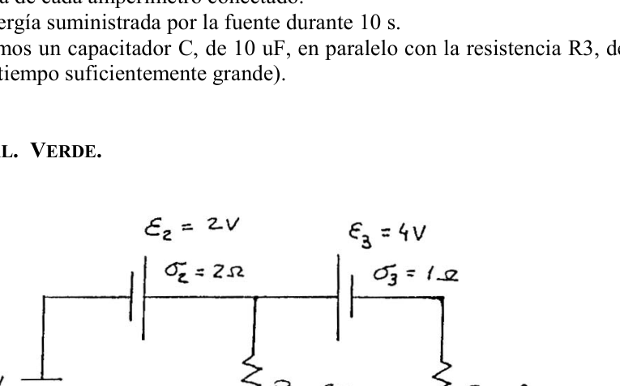
Topic: Circuits Metodi: Equivalent Circuit Reduction, Kirchhoff’s Laws Competenze: Physical Reasoning Objects: Resistor, Battery Fonte: Testo (PDF) — p.2
Instanza locale - 48. La Rioja Azul
Nel circuito della figura, determinare: 3.1. In quale delle R il corrente è minimo? 3.2. In quale delle R il corrente è massima? 3.1. Quale di queste dissipa più energia? Quanto vale in 10 secondi?
(Figura: sorgente di 20V, resistenze di , , e )
Topic: Circuits Metodi: Equivalent Circuit Reduction, Kirchhoff’s Laws Competenze: Physical Reasoning Objects: Resistor, Battery Fonte: Testo (PDF) — p.2
The Commission shall adopt implementing acts in accordance with Article 21 of Regulation (EC) No 1272/2009. The Blue Rioja**
In the figure circuit, determine: 3.1. In which of the R’s is the current minimum? 3.2. In which of the R’s is the current maximal? 3.1. Which one of them dissipates more energy? How much is it worth in 10 seconds?
(Figure: 20V source, resistances of , , and )
Topic: Circuits Metodi: Equivalent Circuit Reduction, Kirchhoff’s Laws Competenze: Physical Reasoning Objects: Resistor, Battery Fonte: Testo (PDF) — p.2
Instancia Local - 49. Junin, Mendoza Verde
La figura muestra una barra larga aislante, sin masa, de longitud l, pivoteada en su centro y balanceada por un peso W que se encuentra a una distancia x de su extremo izquierdo. En el extremo izquierdo de la barra se coloca una carga positiva q, y en el derecho otra de 2 q. A una distancia h, directamente abajo de estas cargas, se colocan dos cargas positivas Q. a) Determinar la distancia x a la que debe estar el peso W para que la barra esta en equilibrio. b) Cual debe ser el valor de h para que la barra no ejerza fuerza vertical alguna sobre el cojinete al estar en equilibrio? Ignorar la interaccion de las cargas de los extremos opuestos de la barra.
(figura)
Topic: Electrostatics, Rigid Body Statics Metodi: Coulomb’s Law, Torque & Angular Momentum Analysis Competenze: Physical Reasoning Objects: Point Charge, Rod Fonte: Testo (PDF) — p.2
**Instanza locale - 49. Junin, Mendoza Verde
La figura mostra una barra lunga, isolante, senza massa, di lunghezza l, pivotata al centro e sbalzata da un peso W che si trova a una distanza x dal suo estremo sinistro. All’estremità sinistra della barra si pone una carica positiva q, e alla destra un’altra di 2 q. A distanza h, direttamente sotto queste cariche, vengono poste due cariche Q positive. a) Determinare la distanza x a cui deve essere il peso W per mantenere il equilibrio della barra. b) Qual è il valore di h per evitare che la barra eserciti alcuna forza verticale sul cuscinetto quando è in equilibrio? Ignorare l’interazione delle cariche delle estremità opposte della barra.
(Figura)
Topic: Electrostatics, Rigid Body Statics Metodi: Coulomb’s Law, Torque & Angular Momentum Analysis Competenze: Physical Reasoning Objects: Point Charge, Rod Fonte: Testo (PDF) — p.2
The Commission shall adopt implementing acts in accordance with Article 21 of Regulation (EC) No 1272/2009. The Commission has not yet adopted a proposal for a regulation.
The figure shows an isolated, massless, long bar of length l, pivoted in its center and balanced by a weight W that lies at a distance x from its left end. At the left end of the bar is a positive charge q, and at the right another charge of 2 q. At a distance h, directly below these charges, two positive Q charges are placed. (a) Determine the distance x at which the weight W must be for the bar to be in balance. (b) What is the value of h so that the bar does not exert any vertical force on the cushion when in balance? Ignore the interaction of the charges at the opposite ends of the bar.
(Figure)
Topic: Electrostatics, Rigid Body Statics Metodi: Coulomb’s Law, Torque & Angular Momentum Analysis Competenze: Physical Reasoning Objects: Point Charge, Rod Fonte: Testo (PDF) — p.2
Instancia Local - 50. Jujuy Verde
En la figura se muestra un circuito tipico de alumbrado domestico. Los focos involucrados estan marcados como: 60 W / 120 V; 100W / 120 V y 75 W / 120V. Calcular de que magnitud seran las corrientes , , cuando: a) Todas las llaves estan cerradas b) Sola la esta cerrada c) Sola las y estan cerradas.
(figura: fuente de 120V, lamparas 60W, 100W, 75W en paralelo)
Topic: Circuits Metodi: Equivalent Circuit Reduction, Kirchhoff’s Laws Competenze: Physical Reasoning Objects: Resistor, Switch Fonte: Testo (PDF) — p.2
Instanza locale - 50. Giuggiolo Verde
La figura mostra un circuito tipico di illuminazione domestica. I foci coinvolti sono segnalati come: 60 W / 120 V; 100 W / 120 V e 75 W / 120 V. Calcolare la magnitudine dei correnti , , quando: a) Tutte le chiavi sono chiuse b) Solo la è chiusa c) Solo le e sono chiuse.
(Figura: sorgente di 120V, lampadine 60W, 100W, 75W in parallelo)
Topic: Circuits Metodi: Equivalent Circuit Reduction, Kirchhoff’s Laws Competenze: Physical Reasoning Objects: Resistor, Switch Fonte: Testo (PDF) — p.2
The Commission shall adopt implementing acts in accordance with Article 21 of this Regulation. The following table shows the results of the evaluation:
The figure shows a typical domestic lighting circuit. The focuses involved are marked as: 60 W / 120 V; 100 W / 120 V and 75 W / 120 V. Calculate the magnitude of the currents , , when: (a) All keys are locked (b) Only the is closed (c) Only and are closed.
(Figure: 120V source, lamps 60W, 100W, 75W in parallel)
Topic: Circuits Metodi: Equivalent Circuit Reduction, Kirchhoff’s Laws Competenze: Physical Reasoning Objects: Resistor, Switch Fonte: Testo (PDF) — p.2
Instancia Local - 51. Mar del Plata, Buenos Aires Azul
En el circuito de la figura:
(figura: con amperimetros A1, A2, A3, A4 y resistencias R1, R2, R3, R4)
a) Indique la lectura de cada amperimetro conectado. b) Determine la energia suministrada por la fuente durante 10 s. c) Si ahora agregamos un capacitor C, de 10 uF, en paralelo con la resistencia R3, determine su carga (luego de un tiempo suficientemente grande).
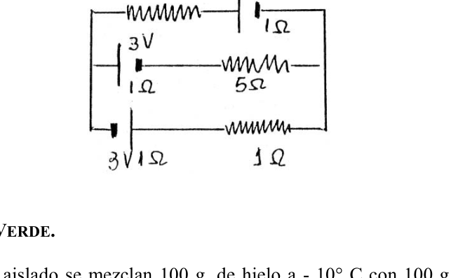
Topic: Circuits Metodi: Equivalent Circuit Reduction, Kirchhoff’s Laws Competenze: Physical Reasoning Objects: Resistor, Battery, Galvanometer, Capacitor Fonte: Testo (PDF) — p.2
Instanza locale - 51. Mar del Plata, Buenos Aires Azul
Nel circuito della figura:
(Figura: con amperometri A1, A2, A3, A4 e resistenze R1, R2, R3, R4)
a) Indicare la lettura di ogni amperiometro collegato. b) Determina l’energia fornita dalla fonte per 10 secondi. c) Se aggiungiamo ora un capacitore C, di 10 uF, in parallelo alla resistenza R3, determina il suo carico (dopo un tempo sufficientemente grande).
Topic: Circuits Metodi: Equivalent Circuit Reduction, Kirchhoff’s Laws Competenze: Physical Reasoning Objects: Resistor, Battery, Galvanometer, Capacitor Fonte: Testo (PDF) — p.2
The Commission shall adopt implementing acts in accordance with Article 21 of Regulation (EC) No 1272/2009. The Commission has also adopted a proposal for a regulation on the protection of the environment.
In the figure circuit:
(Figure: with ampere meters A1, A2, A3, A4 and resistors R1, R2, R3, R4)
(a) Indicate the readings of each connected ampere. (b) Determine the energy supplied by the source for 10 seconds. c) If we now add a capacitor C, of 10 uF, in parallel with the resistance R3, determine its load (after a sufficiently large time).
Topic: Circuits Metodi: Equivalent Circuit Reduction, Kirchhoff’s Laws Competenze: Physical Reasoning Objects: Resistor, Battery, Galvanometer, Capacitor Fonte: Testo (PDF) — p.2
Instancia Local - 52. Capital Federal Verde
En el circuito de la figura calcular: i) La intensidad de corriente en cada resistencia. ii) Si cada una de las resistencias representa una lamparita, Cual de ellas tiene mayor intensidad de luz?
Datos (de la figura): , ; , ; , ; ; ; ; ;
Topic: Circuits Metodi: Kirchhoff’s Laws, Equivalent Circuit Reduction Competenze: Physical Reasoning Objects: Resistor, Battery Fonte: Testo (PDF) — p.2
Instanza locale - 52. Capitale federale verde
Nel circuito della figura calcolare: i) L’intensità di corrente in ogni resistenza. ii) Si cada una de las resistencias representa una lamparita, Cual de ellas tiene mayor intensidad de luz?
Dati (della figura): , ; , ; , ; ; ; ; ;
Topic: Circuits Metodi: Kirchhoff’s Laws, Equivalent Circuit Reduction Competenze: Physical Reasoning Objects: Resistor, Battery Fonte: Testo (PDF) — p.2
Instancia Local - 52. Capital Federal Verde
In the circuit of the figure calculate: (i) The current intensity at each resistance. (ii) If each of the resistors represents a lamp, Which of the resistors has the highest light intensity?
Datos (de la figura): , ; , ; , ; ; ; ; ;
Topic: Circuits Metodi: Kirchhoff’s Laws, Equivalent Circuit Reduction Competenze: Physical Reasoning Objects: Resistor, Battery Fonte: Testo (PDF) — p.2
Instancia Local - 53. Capital Federal Verde
Un tren parte de la estacion de Retiro y tarde 50 segundos en alcanzar una velocidad de 108 km/h con aceleracion constante. Luego, continua con velocidad constante durante otros 50 segundos. En ese momento, llega a la estacion Belgrano e instantaneamente coloca su motor en contramarcha con una aceleracion constante de . A la vez, un observador situado en la estacion Nunez (distante 5 Km de la estacion Retiro) ve pasar por una via paralela a otro tren que se desplaza hacia Retiro a una velocidad constante de 54 km/h. En ese momento mira su reloj y se da cuenta que el primer tren partio hace ya 10 segundos. i) Calcula la posicion y el tiempo donde se van a encontrar ii) Calcula la diferencia entre las distancias recorridas por ambos trenes entre los lugares de encuentro.
Topic: Newtonian Mechanics Metodi: Kinematic Equations Competenze: Physical Reasoning Objects: — Fonte: Testo (PDF) — p.2
Instanza locale - 53. Capitale federale verde
Un treno parte dalla stazione di Retiro e tarda 50 secondi a raggiungere una velocità di 108 km/h con costante accelerazione. Poi continua a velocità costante per altri 50 secondi. A quel punto arriva alla stazione di Belgrano e mette immediatamente il suo motore in contrarresto con un’accelerazione costante di . Allo stesso tempo, un osservatore situato nella stazione Nunez (a 5 Km dalla stazione Retiro) vede passare per una via parallela ad un altro treno che si sposta verso Retiro a una velocità costante di 54 km/h. A quel punto guarda il suo orologio e si rende conto che il primo treno è partito 10 secondi fa. i) Calcola la posizione e il tempo in cui si incontreranno (ii) Calcola la differenza tra le distanze percorse da entrambi i treni tra i luoghi di incontro.
Topic: Newtonian Mechanics Metodi: Kinematic Equations Competenze: Physical Reasoning Objects: — Fonte: Testo (PDF) — p.2
The Commission shall adopt implementing acts in accordance with Article 21 of Regulation (EC) No 1272/2009. The amount of the loan is EUR 10 million.
A train leaves the Retiro station and is 50 seconds late to reach a speed of 108 km/h with constant acceleration. Then continue at a constant speed for another 50 seconds. At that moment, it reaches the Belgrano station and instantly puts its engine on the counter with a constant acceleration of . At the same time, an observer at Nunez station (about 5 km from Retiro station) sees another train passing by a parallel track to Retiro at a constant speed of 54 km/h. At that moment, he looks at his watch and realizes that the first train left 10 seconds ago. (i) Calculate the position and time of meeting (ii) Calculate the difference between the distances travelled by both trains between the meeting places.
Topic: Newtonian Mechanics Metodi: Kinematic Equations Competenze: Physical Reasoning Objects: — Fonte: Testo (PDF) — p.2
Instancia Local - 54. Capital Federal Verde
En el cable, que recorre un borde de una tabla apoyada en un soporte como se ve en el dibujo, circula una corriente de 2 A, mientras esta sometido a un campo magnetico B de 1 T en la direccion indicada. Cual sera el estado (estirado o comprimido) del resorte de k = 30 N/m, y cuanto? Nota: despreciar el peso de la tabla.
(figura: vista superior y vista lateral, dimensiones 7cm, 21cm, 25cm)
Topic: Magnetism, Rigid Body Statics Metodi: Lorentz Force Analysis, Torque & Angular Momentum Analysis, Hooke’s Law Competenze: Physical Reasoning Objects: Wire, Spring, Beam Fonte: Testo (PDF) — p.2
Instanza locale - 54. Capitale federale verde
Nel cavo, che attraversa un bordo di una tavola appoggiata su un supporto come si vede nel disegno, circola un corrente di 2 A, mentre è sottoposta a un campo magnetico B di 1 T nella direzione indicata. Cual sera el estado (estirado o comprimido) del resorte de k = 30 N/m, y cuanto? Nota: disprezzi il peso della tavola.
(figura: vista superiore e vista laterale, dimensioni 7cm, 21cm, 25cm)
Topic: Magnetism, Rigid Body Statics Metodi: Lorentz Force Analysis, Torque & Angular Momentum Analysis, Hooke’s Law Competenze: Physical Reasoning Objects: Wire, Spring, Beam Fonte: Testo (PDF) — p.2
Instancia Local - 54. Capital Federal Verde
In the cable, which runs along a board edge supported on a support as shown in the drawing, a current of 2 A circulates, while it is subjected to a magnetic field B of 1 T in the indicated direction. Cual sera el estado (estirado o comprimido) del resorte de k = 30 N/m, y cuanto? Note: disregard the weight of the table.
(Figure: upper and side view, dimensions 7cm, 21cm, 25cm)
Topic: Magnetism, Rigid Body Statics Metodi: Lorentz Force Analysis, Torque & Angular Momentum Analysis, Hooke’s Law Competenze: Physical Reasoning Objects: Wire, Spring, Beam Fonte: Testo (PDF) — p.2
Instancia Local - 55. Buenos Aires Verde
En el circuito de la figura son: , , , , , , , , , . Calcular I, diferencia de potencial entre A y B?
(figura)
Topic: Circuits Metodi: Kirchhoff’s Laws, Equivalent Circuit Reduction Competenze: Physical Reasoning Objects: Resistor, Battery Fonte: Testo (PDF) — p.2
Instanza locale - 55. Buenos Aires Verde
Il circuito della figura è formato da: , , , , , , , , , . Calcolare I, differenza di potenziale tra A e B?
(Figura)
Topic: Circuits Metodi: Kirchhoff’s Laws, Equivalent Circuit Reduction Competenze: Physical Reasoning Objects: Resistor, Battery Fonte: Testo (PDF) — p.2
The Commission shall adopt implementing acts in accordance with Article 21 of this Regulation. The Commission shall adopt delegated acts in accordance with Article 21 of this Regulation.
The following are in the figure circuit: , , , , , , , , , . Calculate I, potential difference between A and B?
(Figure)
Topic: Circuits Metodi: Kirchhoff’s Laws, Equivalent Circuit Reduction Competenze: Physical Reasoning Objects: Resistor, Battery Fonte: Testo (PDF) — p.2
Instancia Local - 56. Neuquen Verde
Determinar las intensidades de corriente que circulan por cada rama y la potencia disipada por cada resistencia.
(figura: red con resistencias , , y fuentes de 3V con resistencias internas de )
Topic: Circuits Metodi: Kirchhoff’s Laws, Equivalent Circuit Reduction Competenze: Physical Reasoning Objects: Resistor, Battery Fonte: Testo (PDF) — p.2
Instanza locale - 56. Neocene Verde
Determinare le intensità di corrente che circolano per ogni ramo e la potenza dissipata per ogni resistenza.
(Figura: rete con resistenze , , e fonti di 3V con resistenze interne )
Topic: Circuits Metodi: Kirchhoff’s Laws, Equivalent Circuit Reduction Competenze: Physical Reasoning Objects: Resistor, Battery Fonte: Testo (PDF) — p.2
The Commission shall adopt implementing acts in accordance with Article 21 of this Regulation. The following table shows the results of the evaluation:
Determine the current intensities circulating through each branch and the power dissipated by each resistance.
(Figure: network with resistances , , and 3V sources with internal resistances of )
Topic: Circuits Metodi: Kirchhoff’s Laws, Equivalent Circuit Reduction Competenze: Physical Reasoning Objects: Resistor, Battery Fonte: Testo (PDF) — p.2
Instancia Local - 57. Buenos Aires Verde
En un calorimetro aislado se mezclan 100 g. de hielo a con 100 g de agua a y 100 g de vapor de agua a . Si la mezcla se realiza a presion atmosferica, calcular la composicion y temperatura finales. (Suponer equivalente en agua = 0).
Topic: Thermodynamics Metodi: First Law of Thermodynamics Competenze: Physical Reasoning Objects: Calorimeter Fonte: Testo (PDF) — p.2
Fase Locale - 57. Buenos Aires Verde
In un calorimetro isolato si mescolano 100 g di ghiaccio a con 100 g di acqua a e 100 g di vapore acqueo a . Se la miscela avviene a pressione atmosferica, calcolare la composizione e la temperatura finali. (Supporre equivalente in acqua = 0).
Topic: Thermodynamics Metodi: First Law of Thermodynamics Competenze: Physical Reasoning Objects: Calorimeter Fonte: Testo (PDF) — p.2
Local Round - 57. Buenos Aires Verde
In an insulated calorimeter, 100 g of ice at are mixed with 100 g of water at and 100 g of water vapour at . If the mixing takes place at atmospheric pressure, calculate the final composition and temperature. (Assume water equivalent = 0).
Topic: Thermodynamics Metodi: First Law of Thermodynamics Competenze: Physical Reasoning Objects: Calorimeter Fonte: Testo (PDF) — p.2
Instancia Local - 58. Mendoza Azul
Un cuerpo homogeneo de material, cuya densidad es de 1,33 a , flota a dos agua en un liquido cuya temperatura es de y cuyo Peso especifico es de a dicha temperatura. Si se considera que el cuerpo esta en equilibrio termico con el liquido, calcule el coeficiente de dilatacion lineal del material.
Topic: Fluid Mechanics, Thermodynamics Metodi: Hydrostatic Equilibrium Competenze: Physical Reasoning Objects: — Fonte: Testo (PDF) — p.2
Instanza locale - 58. Mendoza Azul
Un corpo omogeneo di materiale, la cui densità è di 1,33 a , galleggia su due acque in un liquido la cui temperatura è di e il cui Peso specifico è di a tale temperatura. Se il corpo è considerato in equilibrio termico con il liquido, calcola il coefficiente di dilatazione lineare del materiale.
Topic: Fluid Mechanics, Thermodynamics Metodi: Hydrostatic Equilibrium Competenze: Physical Reasoning Objects: — Fonte: Testo (PDF) — p.2
The Commission shall adopt implementing acts in accordance with Article 21 of this Regulation. The Commission shall adopt implementing acts in accordance with Article 21 of this Regulation.
A homogeneous body of material, density 1,33 to , floats two waters in a liquid with a temperature of and a specific weight of at that temperature. If the body is considered to be in thermal equilibrium with the liquid, calculate the material’s linear dilation coefficient.
Topic: Fluid Mechanics, Thermodynamics Metodi: Hydrostatic Equilibrium Competenze: Physical Reasoning Objects: — Fonte: Testo (PDF) — p.2
Instancia Local - 59. Cordoba Azul
En la medida fundamental del metabolismo, un paciente espira 52,5 l de aire medidos sobre agua a durante un tiempo de 6 min. La tension de vapor de agua a vale 17,5 mm de mercurio. La presion que indica el barometro es de 750 mm. Despreciando la solubilidad de los gases en agua y la diferencia de volumen total inspirado y espirado, hallar el caudal de oxigeno consumido por el paciente expresandolo en . (a y 760 mm de mercurio).
Topic: Thermodynamics, Kinetic Theory Metodi: Ideal Gas Law Competenze: Physical Reasoning Objects: Gas Fonte: Testo (PDF) — p.2
Instanza locale - 59. Cordoba Azul
Nel parametro fondamentale del metabolismo, un paziente respira 52,5 l di aria misurata su acqua a per un tempo di 6 minuti. La tensione di vapore d’acqua a vale 17,5 mm di mercurio. La pressione indicata dal barometro è di 750 mm. Scommetendo la solubilità dei gas in acqua e la differenza di volume totale di inisorazione ed espirazione, trovare il flusso di ossigeno consumato dal paziente esprimendolo in . (a e 760 mm di mercurio).
Topic: Thermodynamics, Kinetic Theory Metodi: Ideal Gas Law Competenze: Physical Reasoning Objects: Gas Fonte: Testo (PDF) — p.2
The Commission shall adopt implementing acts in accordance with Article 21 of Regulation (EC) No 1272/2009. The following table shows the number of cases of the accident:
In the fundamental measure of metabolism, a patient breathes 52.5 l of air measured above water at for 6 min. The water vapour pressure at is 17,5 mm of mercury. The pressure indicated by the barometer is 750 mm. Disregarding the solubility of gases in water and the difference in total volume of inhalation and exhaled, find the oxygen flow rate consumed by the patient and express it in . (a and 760 mm of mercury).
Topic: Thermodynamics, Kinetic Theory Metodi: Ideal Gas Law Competenze: Physical Reasoning Objects: Gas Fonte: Testo (PDF) — p.2
Instancia Local - 60. Capital Federal Verde
Un cubo de hielo de 50g se saca de la heladera a y se deja caer dentro de un vaso con agua a . Si no hay intercambio de calor con el exterior cual es la masa de agua que se solidifica sobre el cubo.
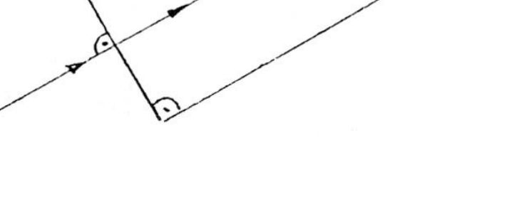
Topic: Thermodynamics Metodi: First Law of Thermodynamics Competenze: Physical Reasoning Objects: — Fonte: Testo (PDF) — p.2
Instanza locale - 60. Capitale federale verde
Un cubetto di ghiaccio di 50 g viene estratto dal frigorifero a e lasciato cadere in un bicchiere con acqua a . Se non c’è scambio di calore con l’esterno quale è la massa di acqua che si solidifica sul cubo.
Topic: Thermodynamics Metodi: First Law of Thermodynamics Competenze: Physical Reasoning Objects: — Fonte: Testo (PDF) — p.2
The Commission shall adopt implementing acts in accordance with Article 21 of Regulation (EC) No 1272/2009. The amount of the loan is EUR 10 million.
A 50 g ice cube is removed from the refrigerator at and dropped into a glass of water at . If there is no heat exchange with the outside what is the mass of water that solidifies over the cube.
Topic: Thermodynamics Metodi: First Law of Thermodynamics Competenze: Physical Reasoning Objects: — Fonte: Testo (PDF) — p.2
Instancia Local - 61. Capital Federal Verde
En un calorimetro, cuya masa equivalente de agua es de 4 gr, hay 8 gr de hielo a una temperatura de , se coloca una agrupacion de resistencias a las que se les alimenta mediante una fuente de tension de 12V, y despues de un tiempo de 1 minuto 20 seg se obtiene agua a una temperatura de . Dadas tres resistencias de valores 1, 3, 4 ohm cual es la agrupacion sumergida? Cual es el tiempo minimo que se puede lograr agrupando adecuadamente esas resistencias? Calor especifico del agua = 1 cal/gr. Calor especifico del hielo = 0,5 cal/gr Calor latente de fusion = 80 cal/gr 1 caloria = 4.1868 Joule
Topic: Thermodynamics, Circuits Metodi: First Law of Thermodynamics, Equivalent Circuit Reduction Competenze: Physical Reasoning Objects: Calorimeter, Resistor, Battery Fonte: Testo (PDF) — p.2
Instanza locale - 61. Capitale federale verde
In un calometro, il cui peso equivalente di acqua è di 4 gr, ci sono 8 gr di ghiaccio a una temperatura di , si colloca un gruppo di resistenze alle quali si alimenta con una fonte di tensione di 12V, e dopo un tempo di 1 minuto 20 seg si ottiene acqua a una temperatura di . Dati tre resistenze di 1, 3, 4 ohm , qual è il gruppo immerso? Cual es el tiempo minimo que se puede lograr agrupando adecuadamente esas resistencias? Calore specifico dell’acqua = 1 cal/gr. Calore specifico del ghiaccio = 0,5 cal/gr Calore latente di fusione = 80 cal/gr 1 caloria = 4.1868 Joule
Topic: Thermodynamics, Circuits Metodi: First Law of Thermodynamics, Equivalent Circuit Reduction Competenze: Physical Reasoning Objects: Calorimeter, Resistor, Battery Fonte: Testo (PDF) — p.2
Instancia Local - 61. Capital Federal Verde
In a calorimeter, the equivalent mass of which is 4 g of water, there is 8 g of ice at a temperature of , a grouping of resistors is placed to which they are fed by a 12 V voltage source, and after a time of 1 minute 20 seconds water is obtained at a temperature of . Given three resistors of values 1, 3, 4 ohm what is the submerged grouping? Cual es el tiempo minimo que se puede lograr agrupando adecuadamente esas resistencias? The specific heat of the water = 1 cal/g. The specific heat of the ice = 0,5 cal/gr The heat latent of fusion = 80 cal/gr 1 calorie = 4,1868 Joule
Topic: Thermodynamics, Circuits Metodi: First Law of Thermodynamics, Equivalent Circuit Reduction Competenze: Physical Reasoning Objects: Calorimeter, Resistor, Battery Fonte: Testo (PDF) — p.2
Instancia Local - 62. Mendoza Verde
El tanque A de la figura, cuyas paredes son rigidas, tiene como medidas 1,1 m de altura, 1,5 m de ancho y 1,5 m de largo; contiene Nitrogeno cuya densidad es de a una temperatura de . El tanque se comunica con un piston a traves de una valvula . El piston consta de un cilindro de 20 cm de diametro y 110 cm de carrera. En la parte final del cilindro se halla una segunda valvula que abre al pasar el embolo, a la cual se halla conectado un globo, cuyo volumen es nulo. En un primer proceso, estando y cerradas, se entrega al recipiente A una cantidad de calor tal que aumenta su presion hasta llegar al doble de la inicial. En un segundo proceso se abre desplazandose el embolo, obteniendo asi un trabajo . Por ultimo, al abrirse , se infla el globo. Los ultimos dos procesos pueden suponerse isotermicos. Considerar calor especifico a P=cte del Nitrogeno = Cp = 0,2484 K cal/kgk. K = 1,4 Calcular: a) El volumen final del globo b) El L desarrollo en el 2do. Proceso c) El calor recibido por el recipiente A d) La variacion de energia interna en el 3er. proceso.
(figura)
Topic: Thermodynamics, Kinetic Theory Metodi: Ideal Gas Law, First Law of Thermodynamics, Thermodynamic Cycle Analysis Competenze: Physical Reasoning Objects: Container, Piston, Cylinder, Gas Fonte: Testo (PDF) — p.2
Instanza locale - 62. Mendoza Verde
Il serbatoio A della figura, i cui muri sono rigidi, ha come misure 1,1 m di altezza, 1,5 m di larghezza e 1,5 m di lunghezza; contiene azoto la cui densità è di a una temperatura di . Il serbatoio si comunica con un pistone attraverso una valvola . Il pistone è costituito da un cilindro di 20 cm di diametro e 110 cm di corsa. Nella parte finale del cilindro si trova una seconda valvola che si apre al passare dell’embolo, alla quale si trova collegato un pallone, il cui volume è zero. In un primo processo, quando e sono chiusi, viene consegnato al recipiente A una quantità di calore tale da aumentare la pressione fino a raggiungere il doppio della pressione iniziale. In un secondo processo si apre spostando l’embolo, ottenendo così un lavoro . Por ultimo, al abrirse , se infla el globo. Gli ultimi due processi possono essere presunti come isotermici. Considera calore specifico a P=cte di nitrogeno = Cp = 0,2484 K cal/kgk. K = 1,4 Calcolo: a) Il volume finale del globolo b) L’evoluzione nel 2. Processo c) Calore ricevuto dal recipiente A d) La variazione dell’energia interna nel 3. processo.
(Figura)
Topic: Thermodynamics, Kinetic Theory Metodi: Ideal Gas Law, First Law of Thermodynamics, Thermodynamic Cycle Analysis Competenze: Physical Reasoning Objects: Container, Piston, Cylinder, Gas Fonte: Testo (PDF) — p.2
The Commission shall adopt implementing acts in accordance with Article 21 of Regulation (EC) No 1272/2005. The Commission shall adopt implementing acts in accordance with Article 21 of this Regulation.
The A tank in the figure, whose walls are rigid, measures 1.1 m high, 1.5 m wide and 1.5 m long; it contains nitrogen with a density of at a temperature of . The tank is communicated by a piston through a valve. The piston consists of a cylinder 20 cm in diameter and 110 cm in stroke. At the end of the cylinder is a second valve which opens when the embolus passes, to which a balloon is connected, the volume of which is zero. In a first process, and being closed, a quantity of heat is delivered to the container A such that its pressure increases to double the initial pressure. In a second process is opened by moving the embolus, thus obtaining a job. Finally, when the opens, the balloon is inflated. The last two processes can be assumed to be isothermal. Consider specific heat to P=cte of nitrogen = Cp = 0,2484 K cal/kgk. K = 1,4 Calculation of the (a) The final volume of the balloon (b) The development in the second. The process (c) The heat received by container A (d) The variation in internal energy in the third. process.
(Figure)
Topic: Thermodynamics, Kinetic Theory Metodi: Ideal Gas Law, First Law of Thermodynamics, Thermodynamic Cycle Analysis Competenze: Physical Reasoning Objects: Container, Piston, Cylinder, Gas Fonte: Testo (PDF) — p.2
Instancia Local - 63. Capital Federal Verde
Un horno electrico, utilizado para esterilizacion, que trabaja con 200 V y cuyo rendimiento es del 73.5%, debe elevar la temperatura en su interior (cuyo volumen es de 835 ) desde (temperatura ambiente y presion normal) hasta en que un termostato bimetalico abre el circuito alimentado por un generador de C.C. de fem que se encuentra a 580 m del horno y conectado a este por medio de conductores de 4 . Se tomo el tiempo desde que se encendio el horno (con su puerta cerrada y su interior lleno solo con aire) hasta que desconecto el bimetalico registrandose minutos 16,05 segundos. Hallar: a. Masa de aire dentro del horno en kg. b. Cantidad de calor entregada por el horno en J. c. Potencia del horno en Kw; HP y kgm/s. d. Potencia absorbida por el horno en Kw. e. Dibujar el circuito y explicar bimetalico. f. Intensidad del circuito y resistencia del horno. g. Resistencia de los conductores de conexion. h. Resistencia interna del generador. i. Tension en bornes del generador. j. Rendimiento del generador. k. Rendimiento del transporte (de la linea). l. Rendimiento de todo el sistema. ll. Suponiendo que en un primer instante el aire mantiene la temperatura, que volumen de aire sale del horno al abrir la puerta a ? m. La densidad del aire que hay en el horno antes y despues de abrir la puerta y las correspondientes presiones en atm; mmHg; hPa; kgf/cm. Datos: ; ; C.N.P.T. ; .
Topic: Thermodynamics, Circuits Metodi: First Law of Thermodynamics, Ideal Gas Law, Equivalent Circuit Reduction Competenze: Physical Reasoning Objects: Resistor, Battery, Gas, Wire Fonte: Testo (PDF) — p.2
Instanza locale - 63. Capitale federale verde
Un forno elettrico, utilizzato per la sterilizzazione, che opera a 200 V e che ha un rendimento del 73,5%, deve elevare la temperatura all’interno (il cui volume è di 835 ) da (temperatura ambiente e pressione normale) a in cui un termostato bimetalico apre il circuito alimentato da un generatore di C.C. di fem situata a 580 m dal forno e collegata a esso mediante conduttori di 4 . Si prende il tempo dal momento in cui si accende il forno (con la porta chiusa e l’interno pieno solo di aria) fino a quando si spegne il bimetallico registrandosi minuti 16,05 secondi. Trovare: a. Massa d’aria all’interno del forno in kg. b. Quantità di calore fornita dal forno in J. c. Potenza del forno in Kw; HP e kgm/s. d. Potenza assorbita dal forno in Kw. e. Disegnare il circuito e spiegare il bimetalico. f. Intensità del circuito e resistenza del forno. g. Resistenza dei conduttori di connessione. h. Resistenza interna del generatore. i. Tensione a bordo del generatore. j. Rendimento del generatore. k. Rendizioni di trasporto (linea). l. Performance dell’intero sistema. ll. Suponiendo que en un primer instante el aire mantiene la temperatura, que volumen de aire sale del horno al abrir la puerta a ? m. La densità dell’aria che si trova nel forno prima e dopo l’apertura della porta e le relative pressioni in atm; mmHg; hPa; kgf/cm. Data: ; ; C.N.P.T. ; .
Topic: Thermodynamics, Circuits Metodi: First Law of Thermodynamics, Ideal Gas Law, Equivalent Circuit Reduction Competenze: Physical Reasoning Objects: Resistor, Battery, Gas, Wire Fonte: Testo (PDF) — p.2
Instancia Local - 63. Capital Federal Verde
An electric furnace, used for sterilisation, operating at 200 V and having a performance of 73.5%, shall raise the temperature inside (volume 835 ) from (normal ambient temperature and pressure) to where a bimetallic thermostat opens the circuit fed by a C.C. generator. a fem located 580 m from the furnace and connected to it by conductors of 4 . It takes the time from the time the oven is lit (with its door closed and its interior filled only with air) until the bimetallic is disconnected and minutes 16.05 seconds. Find the number of a. Mass of air inside the furnace in kg. b. Amount of heat delivered by the furnace in J. c. The power of the furnace in Kw; HP and kgm/s. d. Power absorbed by the furnace in Kw. e. Draw the circuit and explain bimetallic. f. Circuit intensity and furnace resistance. g. Resistance of the connecting conductors. h. Internal resistance of the generator. i. The voltage at the generator terminals. j. The power output of the generator. k. Transport performance (of the line). l. Performance of the entire system. ll. Assuming that at first the air maintains the temperature, what volume of air comes out of the oven when opening the door to ? m. The density of the air in the oven before and after opening the door and the corresponding pressures in atm; mmHg; hPa; kgf/cm. Datos: ; ; C.N.P.T. ; .
Topic: Thermodynamics, Circuits Metodi: First Law of Thermodynamics, Ideal Gas Law, Equivalent Circuit Reduction Competenze: Physical Reasoning Objects: Resistor, Battery, Gas, Wire Fonte: Testo (PDF) — p.2
Instancia Local - 64. Capital Federal Verde
Dado el circuito de la figura, con resistencias , y conectadas a una bateria de . Se coloca una esfera de radio cerca del circuito. Calcule cuanto aumenta como maximo la temperatura y el volumen de la esfera, 1 minuto despues de haber sido conectada la bateria, haciendo las hipotesis y aproximaciones que considere necesarias. Datos: El calor especifico del Fe es: y el coeficiente de dilatacion lineal es: , y la densidad es: .
(figura)
Topic: Circuits, Thermodynamics Metodi: Equivalent Circuit Reduction, First Law of Thermodynamics Competenze: Physical Reasoning Objects: Resistor, Battery, Sphere Fonte: Testo (PDF) — p.2
Instanza locale - 64. Capitale federale verde
Dato il circuito della figura, con resistenze , e collegate a una batteria . Si colloca una sfera radio vicino al circuito. Calcola quanto la temperatura e il volume della sfera aumentano al massimo, 1 minuto dopo che la batteria è stata collegata, facendo le ipotesi e le approssimazioni che ritiene necessarie. Dati: Il calore specifico della Fe è: e il coefficiente di dilatazione lineare è: , e la densità è: .
(Figura)
Topic: Circuits, Thermodynamics Metodi: Equivalent Circuit Reduction, First Law of Thermodynamics Competenze: Physical Reasoning Objects: Resistor, Battery, Sphere Fonte: Testo (PDF) — p.2
The Commission shall adopt implementing acts in accordance with Article 21 of Regulation (EC) No 1272/2009. The amount of the loan is EUR 10 million.
Given the circuit in the figure, with resistances , and connected to a battery of . A radius sphere is placed near the circuit. Calculate how much the temperature and volume of the sphere increase as much as possible, 1 minute after the battery has been connected, making the hypotheses and approximations that you consider necessary. Data: The specific heat of the Fe is: and the linear dilation coefficient is: , and the density is: .
(Figure)
Topic: Circuits, Thermodynamics Metodi: Equivalent Circuit Reduction, First Law of Thermodynamics Competenze: Physical Reasoning Objects: Resistor, Battery, Sphere Fonte: Testo (PDF) — p.2
Instancia Local - 65. Buenos Aires Verde
La luz incide normalmente sobre la cara menor de un prisma cuyos angulos son , y . Sobre la hipotenusa del prisma se coloca una gota de liquido. El indice de refraccion del prisma es 1,5. Determinar el indice maximo que puede tener el liquido para que el rayo luminoso se refleja totalmente.
(figura)
Topic: Geometric Optics Metodi: Snell’s Law, Ray Tracing Competenze: Physical Reasoning Objects: Prism Fonte: Testo (PDF) — p.2
Instanza locale - 65. Buenos Aires Verde
La luce incide normalmente sul lato minore di un prisma i cui angoli sono , e . Sopra l’ipotenuza del prisma si colloca una goccia di liquido. L’indice di refraczione del prisma è di 1,5. Determinare l’indice massimo che il liquido può avere per far riflettere completamente il raggio luminoso.
(Figura)
Topic: Geometric Optics Metodi: Snell’s Law, Ray Tracing Competenze: Physical Reasoning Objects: Prism Fonte: Testo (PDF) — p.2
The Commission shall adopt implementing acts in accordance with Article 21 of Regulation (EC) No 1272/2009. The Commission shall adopt delegated acts in accordance with Article 21 of this Regulation.
The light normally hits the lower face of a prism whose angles are , and . A drop of liquid is placed above the hypotenuse of the prism. The refractive index of the prism is 1.5. Determine the maximum index the liquid can have so that the light beam is fully reflected.
(Figure)
Topic: Geometric Optics Metodi: Snell’s Law, Ray Tracing Competenze: Physical Reasoning Objects: Prism Fonte: Testo (PDF) — p.2
Instancia Local - 66. Capital Federal Verde
Hallar el minimo indice de refraccion que debe tener el prisma triangular para que el rayo de luz emitido por la fuente de la figura B llegue a la celula fotosensible. Calcular el tiempo que tarda el rayo en alcanzarla. .
(figura: fuente de luz coherente, prisma triangular con angulos de , celula fotosensible, dimensiones 4m, 1,4m, , 2,5 m, , 3 m)
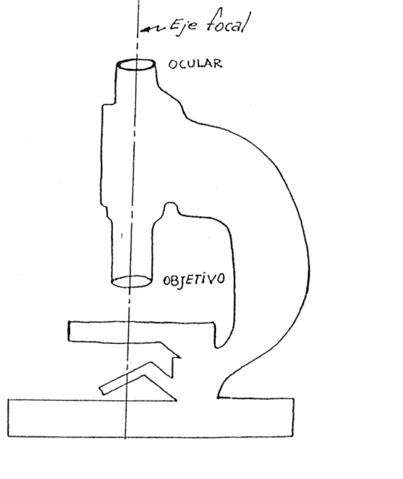
Topic: Geometric Optics Metodi: Snell’s Law, Ray Tracing Competenze: Physical Reasoning Objects: Prism Fonte: Testo (PDF) — p.2
Instanza locale - 66. Capitale federale verde
Trovare il minimo indice di refraczione che il prisma triangolare deve avere per far raggiungere la cellula fotosensibile il raggio di luce emesso dalla fonte della figura B. Calcolare il tempo che ci vuole per raggiungere il raggio. .
(figura: fonte di luce coerente, prisma triangolare con angoli , cellula fotosensibile, dimensioni 4m, 1,4m, , 2,5m, , 3m)
Topic: Geometric Optics Metodi: Snell’s Law, Ray Tracing Competenze: Physical Reasoning Objects: Prism Fonte: Testo (PDF) — p.2
The Commission shall adopt implementing acts in accordance with Article 21 of this Regulation. The amount of the loan is EUR 10 million.
Find the minimum refractive index that the triangular prism must have for the light beam emitted by the source in Figure B to reach the photosensitive cell. Calculate how long it takes the lightning to reach it. .
(Figure: consistent light source, triangular prism with angles of , photosensitive cell, dimensions 4m, 1,4m, , 2,5m, , 3m)
Topic: Geometric Optics Metodi: Snell’s Law, Ray Tracing Competenze: Physical Reasoning Objects: Prism Fonte: Testo (PDF) — p.2
Instancia Local - 67. Rio Segundo, Cordoba Verde
El microscopio ilustrado en la figura consta de un objetivo de 20 dioptrias y un ocular de 10 dioptrias, separados una distancia de 20 cm. En un microscopio, el objeto normalmente se coloca muy cerca del objetivo, Pero la distancia del objeto a esta lente, debe ser mayor, menor o igual a su distancia focal?, por que?. A que distancia del objeto colocaria el objeto en el microscopio de la figura?. (a) 4 cm. (b) 7 cm. (c) 2 cm. Con la distancia seleccionada encuentre el tamano y ubicacion de la imagen observada. Considere como H = tamano del objeto. Esta imagen final proporcionada por el ocular del microscopio, es real o virtual?. La figura no esta realizada a escala.
(figura)
Topic: Geometric Optics Metodi: Thin Lens & Mirror Equation, Ray Tracing Competenze: Physical Reasoning Objects: Lens Fonte: Testo (PDF) — p.2
Instanza locale - 67. Rio Segundo, Cordoba Verde
Il microscopio illustrato nella figura è costituito da un obiettivo di 20 dioptree e da un occhio di 10 dioptree, separati a una distanza di 20 cm. En un microscopio, el objeto normalmente se coloca muy cerca del objetivo, Pero la distancia del objeto a esta lente, debe ser mayor, menor o igual a su distancia focal?, por que?. A che distanza dall’oggetto si collocherebbe l’oggetto al microscopio della figura? (a) 4 cm. (b) 7 cm. (c) 2 cm. Con la distanza selezionata, trova la dimensione e la posizione dell’immagine osservata. Considera come H = taglio dell’oggetto. Questa immagine finale fornita dall’oculare del microscopio, è reale o virtuale? La figura non è realizzata su scala.
(Figura)
Topic: Geometric Optics Metodi: Thin Lens & Mirror Equation, Ray Tracing Competenze: Physical Reasoning Objects: Lens Fonte: Testo (PDF) — p.2
Instancia Local - 67. Rio Segundo, Cordoba Verde
The microscope shown in the figure consists of a lens of 20 dioptrias and an eyepiece of 10 dioptrias, separated by a distance of 20 cm. En un microscopio, el objeto normalmente se coloca muy cerca del objetivo, Pero la distancia del objeto a esta lente, debe ser mayor, menor o igual a su distancia focal?, por que?. What distance from the object would you place the object in the figure’s microscope? (a) 4 cm. (b) 7 cm. (c) 2 cm. With the distance selected, find the size and location of the image observed. Consider H = the object’s size. This final image provided by the microscope’s eyepiece, is real or virtual? The figure is not made on a scale.
(Figure)
Topic: Geometric Optics Metodi: Thin Lens & Mirror Equation, Ray Tracing Competenze: Physical Reasoning Objects: Lens Fonte: Testo (PDF) — p.2
Instancia Local - 68. Capital Federal Verde
Un instrumento optico esta formado por dos lentes, una convergente y un divergente, ambas de 10 cm de distancia focal y separadas entre si 30 cm. i) Determina la imagen obtenida de un objeto de 4 cm de alto situado a 20 cm de la lente convergente como se ve en la figura: Dar las caracteristicas de la imagen final. Resuelve grafica y analiticamente. ii) Si agregas a continuacion de la lente divergente otra lente convergente (f = 10 cm), Donde debes colocarla para que la imagen sea real y dos veces mayor que el objeto? Resuelve analiticamente y verifica graficamente.
(figura)
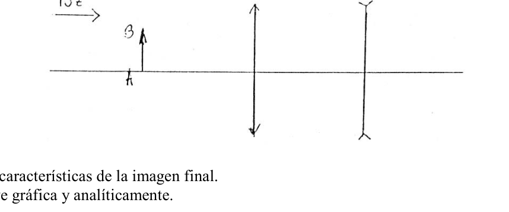
Topic: Geometric Optics Metodi: Thin Lens & Mirror Equation, Ray Tracing Competenze: Physical Reasoning Objects: Lens Fonte: Testo (PDF) — p.2
Instanza locale - 68. Capitale federale verde
Un strumento ottico è costituito da due obiettivi, convergente e divergente, entrambi a 10 cm di distanza focale e separati tra loro di 30 cm. i) Determina l’immagine ottenuta da un oggetto di 4 cm di altezza situato a 20 cm dalla lente convergente come si vede nella figura:
- Da’ le caratteristiche dell’immagine finale. Risolve graficamente e analiticamente. ii) Se aggiungi continuamente alla lente divergente un’altra lente convergente (f = 10 cm), Dove la devi posizionare per rendere l’immagine reale e due volte più grande dell’oggetto? Risolve analiticamente e verifica graficamente.
(Figura)
Topic: Geometric Optics Metodi: Thin Lens & Mirror Equation, Ray Tracing Competenze: Physical Reasoning Objects: Lens Fonte: Testo (PDF) — p.2
The Commission shall adopt implementing acts in accordance with Article 6 of this Regulation. The amount of the loan is EUR 10 million.
An optical instrument consists of two lenses, a convergent and a divergent, both 10 cm from the focal length and 30 cm apart. (i) Determine the image obtained from a 4 cm high object located 20 cm from the convergent lens as shown in Figure: Give the characteristics of the final image. It solves graphically and analytically. (ii) If you add another convergent lens (f = 10 cm) to the divergent lens continuously, Where should you place it so that the image is real and twice the size of the object? It solves analytically and verifies graphically.
(Figure)
Topic: Geometric Optics Metodi: Thin Lens & Mirror Equation, Ray Tracing Competenze: Physical Reasoning Objects: Lens Fonte: Testo (PDF) — p.2
Instancia Local - 69. Cordoba Azul
Se tiene una lamina de caras paralelas cuyo espesor es de 3 cm y cuyo indice de refraccion es 1,5. Sobre ella incide un rayo con un angulo de incidencia de . Calcular la longitud del rayo interior y la distancia entre el rayo incidente y el rayo emergente.
Topic: Geometric Optics Metodi: Snell’s Law, Ray Tracing Competenze: Physical Reasoning Objects: — Fonte: Testo (PDF) — p.2
Instanza locale - 69. Cordoba Azul
Si dispone di una lamina di facce parallele di 3 cm di spessore e di un indice di refraczione di 1,5. Su di essa incide un raggio con un angolo di incidenza di . Calcolare la lunghezza del raggio interno e la distanza tra il raggio incidente e il raggio emergente.
Topic: Geometric Optics Metodi: Snell’s Law, Ray Tracing Competenze: Physical Reasoning Objects: — Fonte: Testo (PDF) — p.2
The Commission shall adopt implementing acts in accordance with Article 21 of Regulation (EC) No 1272/2009. The following table shows the number of cases of the accident:
It has a sheet of parallel faces 3 cm thick and a refractive index of 1.5. Above it is a beam with an angle of incidence of . Calculate the length of the inner beam and the distance between the incident beam and the emerging beam.
Topic: Geometric Optics Metodi: Snell’s Law, Ray Tracing Competenze: Physical Reasoning Objects: — Fonte: Testo (PDF) — p.2
Instancia Local Experimental - 70. Mendoza Verde
Si te encontras con una linea enterrada como la de la figura 1, que ha sufrido un desperfecto poniendose a tierra. La misma esta representada como una caja con tres terminales figura 2.
(figura 1 y figura 2)
Queres saber a que distancia tenes que perforar para repararla contando con: a- Fuente de corriente continua. b- Dos resistencias fijas conocidas. c- Una resistencia variable conocida. d- Un galvanometro digital. e- Longitud de la linea… m. f- Resistividad del cobre 0.0175. g- Diametro de la linea 1 mm. Nota: La resistencia variable conocida sera medida por el profesor cuando el alumno lo requiera. Se sugiere para la solucion de esta practica utilizar la teoria del puente de Wheatstone y unir uno de los extremos de la linea segun figura 1. Advertencia: No superar los 3 Volt en la tension de la fuente. Se admite para el ajuste del cero del puente un error de 40 mV.
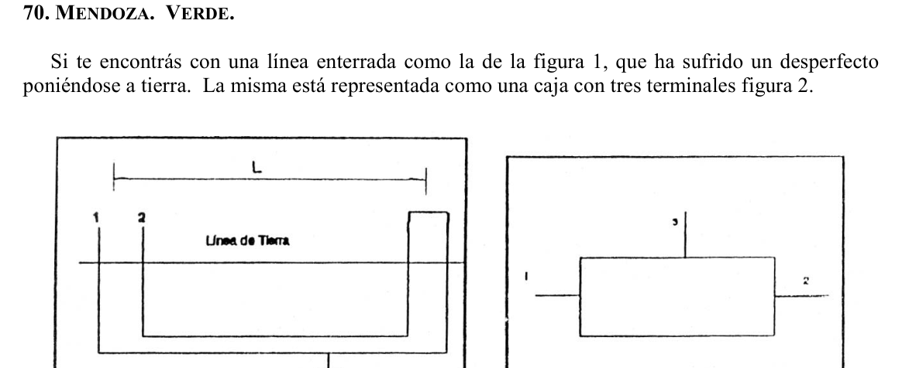
Topic: Circuits Metodi: Equivalent Circuit Reduction, Experimental Data Analysis, Error Propagation Competenze: Experimental Data Analysis, Physical Reasoning Objects: Resistor, Galvanometer, Battery, Wire Fonte: Testo (PDF) — p.2
Instanza locale sperimentale - 70. Mendoza Verde
Se si trova una linea sepolta come quella della figura 1, che ha subito un guasto, gettandosi a terra. La stessa è rappresentata come una scatola con tre terminali in figura 2.
(Figura 1 e 2)
Vuoi sapere a che distanza devi perforare per ripararla con: a- Fonte di corrente continua. b- Due resistenze fisse note. c- resistenza variabile nota. d- Un galvanometro digitale. e- Lunghezza della linea… m. f- Resistenza del rame 0,0175. g- Diametro della linea 1 mm. Nota: La resistenza variabile nota sarà misurata dal docente quando lo richiede lo studente. Si suggerisce per la soluzione di questa pratica di utilizzare la teoria del ponte di Wheatstone e unire uno degli estremità della linea come in figura 1. Attenzione: non superare i 3 volt nella tensione della fonte. Per il regolamento del zero del ponte è ammesso un errore di 40 mV.
Topic: Circuits Metodi: Equivalent Circuit Reduction, Experimental Data Analysis, Error Propagation Competenze: Experimental Data Analysis, Physical Reasoning Objects: Resistor, Galvanometer, Battery, Wire Fonte: Testo (PDF) — p.2
The Commission has decided to extend the period of validity of the application. The Commission shall adopt delegated acts in accordance with Article 21 of this Regulation.
If you encounter a line buried like that in Figure 1, it’s been damaged by a fall to the ground. It is represented as a box with three terminals in figure 2.
(Figure 1 and Figure 2)
You want to know how far you have to drill to repair it using: a- Continuous power source. b- Two known fixed resistors. c- Known variable resistance. The following information shall be provided: e- Length of the line… m. F- Copper resistance of 0.0175. g- Line diameter 1 mm. Note: The known variable resistance will be measured by the teacher when the student requires it. It is suggested for the solution of this practice to use Wheatstone’s bridge theory and join one of the ends of the line as shown in Figure 1. Warning: Do not exceed 3 volts in the source voltage. A 40 mV error is allowed for the zero adjustment of the bridge.
Topic: Circuits Metodi: Equivalent Circuit Reduction, Experimental Data Analysis, Error Propagation Competenze: Experimental Data Analysis, Physical Reasoning Objects: Resistor, Galvanometer, Battery, Wire Fonte: Testo (PDF) — p.2
Instancia Local Experimental - 71. Entre Rios Azul
OBJETO DEL TRABAJO: estudio del movimiento de un cuerpo. MATERIAL A UTILIZAR: canaleta, rampa de lanzamiento, papel milimetrado, cronometro, bolilla o acero. TAREAS A DESARROLLAR: I) Estudio de un movimiento uniforme y sus representaciones graficas. (tabla: e(m), t(seg), t(seg) medio, v(m/seg)) II) Estudio de un movimiento uniformemente variado y sus representaciones graficas. (tabla: e(m), t(seg), t(seg) medio, , ) Sugerencias: a- Enuncie e indique las leyes de la cinematica que considere aplicables al problema. b- Mencione posibles causa de errores experimentales. c- De una estimacion del error experimental de la medicion realizada. d- Anote todas las observaciones mientras trabaja y redacte prolijamente un breve informe aunque no logre dichos movimientos.
Topic: Newtonian Mechanics Metodi: Kinematic Equations, Experimental Data Analysis, Graph Linearization Competenze: Experimental Data Analysis, Physical Reasoning Objects: Ball, Inclined Plane Fonte: Testo (PDF) — p.2
Instanza locale sperimentale - 71. Tra i Fiumi Azul
Oggetto del lavoro: studiare il movimento di un corpo. MATERIAL: canale, rampa di lancio, carta millimetrica, cronometro, bolla o acciaio. Sviluppo di tasse: I) Studi di un movimento uniforme e delle sue rappresentazioni grafiche. (tabella: e(m), t(seg), t(seg) medio, v(m/seg)) II) Studi di un movimento uniformemente variabile e delle sue rappresentazioni grafiche. (tabella: e(m), t(seg), t(seg) medio, , ) Suggerimenti: a- Indicare e definire le leggi della cinematografia che ritiene applicabili al problema. b- Indicare possibili cause di errori sperimentali. c- Una stima dell’errore sperimentale della misurazione effettuata. d- Notare tutte le osservazioni mentre si lavora e redigere con facilità un breve rapporto se non si raggiungono tali movimenti.
Topic: Newtonian Mechanics Metodi: Kinematic Equations, Experimental Data Analysis, Graph Linearization Competenze: Experimental Data Analysis, Physical Reasoning Objects: Ball, Inclined Plane Fonte: Testo (PDF) — p.2
Local Experimental Round - 71. Entre Rios Azul
OBJECTIVE OF THE WORK: study of the motion of a body. MATERIALS TO BE USED: channel track, launch ramp, graph paper, stopwatch, ball or steel ball. TASKS TO CARRY OUT: I) Study of a uniform motion and its graphical representations. (table: e(m), t(seg), t(seg) mean, v(m/seg)) II) Study of a uniformly accelerated motion and its graphical representations. (table: e(m), t(seg), t(seg) mean, , ) Suggestions: a- State and indicate the laws of kinematics that you consider applicable to the problem. b- Mention possible causes of experimental errors. c- Give an estimate of the experimental error of the measurement made. d- Note down all observations while you work and carefully write up a brief report even if you do not achieve said motions.
Topic: Newtonian Mechanics Metodi: Kinematic Equations, Experimental Data Analysis, Graph Linearization Competenze: Experimental Data Analysis, Physical Reasoning Objects: Ball, Inclined Plane Fonte: Testo (PDF) — p.2
Instancia Local Experimental - 72. Cordoba Azul
Se pide determinar la densidad de un cuerpo solido y de un liquido. Materiales e instrumentos disponibles: Agua, probeta graduada, base soporte, bola con tornillo, dinamometro, nuez doble, varillas soporte, hilo de seda, alcohol. Describir de manera clara el procedimiento escogido (parte teorica y experimental).
Topic: Fluid Mechanics Metodi: Hydrostatic Equilibrium, Experimental Data Analysis Competenze: Experimental Data Analysis, Physical Reasoning Objects: Sphere Fonte: Testo (PDF) — p.2
Instanza locale sperimentale - 72. Cordoba Azul
Si chiede di determinare la densità di un corpo solido e di un liquido. Materiali e strumenti disponibili: acqua, prova graduata, base di supporto, palla con tornino, dinamometro, doppio noce, bastone di supporto, filo di seta, alcol. Descrivere chiaramente la procedura scelta (parte teorica e parte sperimentale).
Topic: Fluid Mechanics Metodi: Hydrostatic Equilibrium, Experimental Data Analysis Competenze: Experimental Data Analysis, Physical Reasoning Objects: Sphere Fonte: Testo (PDF) — p.2
The Commission shall adopt implementing acts in accordance with Article 21 of Regulation (EC) No 1272/2005. The following table shows the number of cases of the accident:
The density of a solid and liquid is asked to be determined. Materials and instruments available: Water, graduated test, supporting base, screw ball, dynamometer, double nut, support rods, silk thread, alcohol. Clearly describe the procedure chosen (theoretical and experimental part).
Topic: Fluid Mechanics Metodi: Hydrostatic Equilibrium, Experimental Data Analysis Competenze: Experimental Data Analysis, Physical Reasoning Objects: Sphere Fonte: Testo (PDF) — p.2
Instancia Local Experimental - 73. Jujuy Verde
OBJETIVO: Calcular la aceleracion de la gravedad en la ciudad de San Salvador de Jujuy. (Altitud de S.S. de Jujuy 1289 m sobre el nivel del mar). ELEMENTOS: Cronometro Esfera Calibre Regla milimetrada Hilo de naylon Soporte REQUERIMIENTOS: Solo podra utilizar los elementos ofrecidos, papel, lapiz. calculadora. El informe debe constar de:
- Planteo analitico del problema
- Metodo experimental usado
- Valores obtenidos en las mediciones realizadas
- Fuentes de error y analisis de como influyen en el resultado
- Resultado experimental de lo solicitado.
Topic: Oscillations & Waves Metodi: Simple Harmonic Motion Analysis, Experimental Data Analysis, Error Propagation Competenze: Experimental Data Analysis, Physical Reasoning Objects: Pendulum, Sphere Fonte: Testo (PDF) — p.2
Instanza locale sperimentale - 73. Giuggiolo Verde
OGITIVO: Calcolare l’accelerazione della gravità nella città di San Salvador de Jujuy. (Altezza di S.S. di Jujuy a 1289 m. I seguenti elementi: Clockometro Sfera Calibro Regola di millimetro Felle di naylon Supporto RICERICI: Potrà usare solo gli elementi offerti, carta, penna. Calcolatore. Il rapporto deve contenere:
- Sulla base di un’analisi del problema
- Metodo sperimentale utilizzato
- Valori ottenuti dalle misurazioni effettuate
- Fonti di errore e analisi di come influenzano il risultato
- Risultato sperimentale della richiesta.
Topic: Oscillations & Waves Metodi: Simple Harmonic Motion Analysis, Experimental Data Analysis, Error Propagation Competenze: Experimental Data Analysis, Physical Reasoning Objects: Pendulum, Sphere Fonte: Testo (PDF) — p.2
The Commission has decided to extend the period of validity of the application. The following table shows the results of the evaluation:
OBJECTIVE: Calculate the acceleration of gravity in the city of San Salvador de Jujuy. (Height of S.S. The area of Jujuy is 1289 m above sea level. The following elements: The time The sphere Other Millimeter rule Other, of a width of <= 600 mm Support The following requirements: You can only use the items offered, paper, pencil. It’s a calculator. The report shall contain:
- Analytical approach to the problem
- Experimental method used
- Values obtained from measurements made
- Error sources and analyses of how they influence the outcome
- Experimental result of the requested product.
Topic: Oscillations & Waves Metodi: Simple Harmonic Motion Analysis, Experimental Data Analysis, Error Propagation Competenze: Experimental Data Analysis, Physical Reasoning Objects: Pendulum, Sphere Fonte: Testo (PDF) — p.2
Instancia Local Experimental - 74. Mar del Plata, Buenos Aires Azul
Determinar, utilizando una tabla de madera y un taco, el coeficiente de roce estatico entre ambos materiales. Explicar analiticamente el metodo experimental elegido. Elementos disponibles: taco, tabla de madera, papel milimetrado.
Topic: Newtonian Mechanics Metodi: Free-Body Diagram, Experimental Data Analysis Competenze: Experimental Data Analysis, Physical Reasoning Objects: Block, Inclined Plane Fonte: Testo (PDF) — p.2
Instanza locale sperimentale - 74. Mar del Plata, Buenos Aires Azul
Determinare, utilizzando una tavola di legno e un palo, il coefficiente di rottura statica tra i due materiali. Esprimi analiticamente il metodo sperimentale scelto. Elementi disponibili: taco, tavola in legno, carta millimetrica.
Topic: Newtonian Mechanics Metodi: Free-Body Diagram, Experimental Data Analysis Competenze: Experimental Data Analysis, Physical Reasoning Objects: Block, Inclined Plane Fonte: Testo (PDF) — p.2
The Commission shall adopt implementing acts in accordance with Article 74. The Commission has also adopted a proposal for a regulation on the protection of the environment.
Determine, using a wooden board and a taco, the static friction coefficient between the two materials. Analytically explain the chosen experimental method. Available items: taco, wood panel, millimeter paper.
Topic: Newtonian Mechanics Metodi: Free-Body Diagram, Experimental Data Analysis Competenze: Experimental Data Analysis, Physical Reasoning Objects: Block, Inclined Plane Fonte: Testo (PDF) — p.2
Instancia Local Experimental - 75. Mar del Plata, Buenos Aires Azul
Determinar el indice de refraccion del material de un prisma transparente, utilizando: alfileres, telgopor, papel milimetrado, un prisma.
Topic: Geometric Optics Metodi: Snell’s Law, Experimental Data Analysis Competenze: Experimental Data Analysis, Physical Reasoning Objects: Prism Fonte: Testo (PDF) — p.2
Instanza locale sperimentale - 75. Mar del Plata, Buenos Aires Azul
Determinare l’indice di refraczione del materiale di una prisma trasparente, utilizzando: pinze, telgopore, carta millimetrica, una prisma.
Topic: Geometric Optics Metodi: Snell’s Law, Experimental Data Analysis Competenze: Experimental Data Analysis, Physical Reasoning Objects: Prism Fonte: Testo (PDF) — p.2
The Commission shall adopt delegated acts in accordance with Article 7 of Regulation (EC) No 1272/2009. The Commission has also adopted a proposal for a regulation on the protection of the environment.
Determine the refractive index of a transparent prism material using pins, telgopores, millimeter paper, a prism.
Topic: Geometric Optics Metodi: Snell’s Law, Experimental Data Analysis Competenze: Experimental Data Analysis, Physical Reasoning Objects: Prism Fonte: Testo (PDF) — p.2
Instancia Local Experimental - 76. Rosario, Santa Fe Verde
Se sabe que cuando se hace oscilar un cuerpo pequeno, colgado de una cuerda de longitud L, (pendulo), el periodo de dicha oscilacion es: L: longitud del pendulo T: Periodo g: aceleracion de la gravedad Este formula es cierta para oscilaciones de pequena amplitud (menos de ).
- Con los materiales de que dispone disene y realice un experimento para medir la aceleracion de la gravedad.
- Explique como realizo las mediciones.
- Indique que precision (numero de cifras significativas o de decimales) tuvo cada medicion.
- Usted no va a obtener un valor exacto de g. De cuantos decimales puede estar seguro?
- Que modificaciones haria para obtener un resultado mas preciso, si tuviera que realizar nuevamente la experiencia?
Topic: Oscillations & Waves Metodi: Simple Harmonic Motion Analysis, Experimental Data Analysis, Error Propagation Competenze: Experimental Data Analysis, Physical Reasoning Objects: Pendulum Fonte: Testo (PDF) — p.2
Instanza locale sperimentale - 76. Rosario, Santa Fe Verde
Si sa che quando si oscilla un piccolo corpo, appeso a una corda di lunghezza L, (pendolo), il periodo di tale oscillazione è: L: lunghezza del pendolo T: Periodo g: accelerazione della gravità Questa formula è valida per oscillazioni di piccola larghezza (meno di ).
- Con i materiali a sua disposizione disegna e esegue un esperimento per misurare l’accelerazione della gravità.
- Spiegare come faccio le misurazioni.
- Indicare che precisione (numero di cifre significative o decimali) ha avuto ogni misurazione.
- Non otterrete un valore preciso di g. Di quante decimali si può essere sicuri?
- Quali modifiche farebbe per ottenere un risultato più preciso, se dovesse rivedere l’esperimento?
Topic: Oscillations & Waves Metodi: Simple Harmonic Motion Analysis, Experimental Data Analysis, Error Propagation Competenze: Experimental Data Analysis, Physical Reasoning Objects: Pendulum Fonte: Testo (PDF) — p.2
The Commission has also adopted a number of proposals for the establishment of a new European research centre. The Commission shall adopt implementing acts in accordance with Article 21 of this Regulation.
It is known that when a small body, suspended from a string of length L, (pendulum), is oscillated, the period of such oscillation is: L: length of the pendulum The following is the list of the countries of origin: The following shall be added: This formula is true for small-width oscillations (less than ).
- Use the materials at your disposal to design and perform an experiment to measure gravitational acceleration.
- Explain how I perform the measurements.
- Indicate the precision (number of significant figures or decimal places) of each measurement.
- You’re not going to get an exact value of g. How many decimals can you be sure of?
- What changes would you make to get a more accurate result if you had to do the experiment again?
Topic: Oscillations & Waves Metodi: Simple Harmonic Motion Analysis, Experimental Data Analysis, Error Propagation Competenze: Experimental Data Analysis, Physical Reasoning Objects: Pendulum Fonte: Testo (PDF) — p.2
Instancia Local Experimental - 77. Capital Federal Verde
Objetivo: Mediante un sistema experimental, verificar el modelo teorico de las Leyes de Newton. Materiales: 1 riel 1 vagon 1 polea hilo 10 pesas cinta metrica, regla milimetrada cronometro resorte soporte balanza papel milimetrado Sugerencias: Plantea las ecuaciones correspondientes a los diagramas de cuerpo libre sin olvidarte la fuerza de rozamiento. Presenta un informe incluyendo tabla de valores, graficos, errores estimados, resultado experimental y conclusiones que desees hacer guiandote con las siguientes preguntas:
- La constante que calculaste, Que masa representa en nuestro sistema experimental?
- Bajo que condiciones se puede considerar que la masa calculada es constante?
- Cual es la maxima aceleracion posible del sistema? Se puede llegar a ella aun despreciando la fuerza de rozamiento?
- La fuerza de rozamiento calculada es constante en el tiempo?
Topic: Newtonian Mechanics Metodi: Free-Body Diagram, Experimental Data Analysis, Graph Linearization Competenze: Experimental Data Analysis, Physical Reasoning Objects: Cart, Pulley, String, Spring Fonte: Testo (PDF) — p.2
Instanza locale sperimentale - 77. Capitale federale verde
Obiettivo: Attraverso un sistema sperimentale, verificare il modello teorico delle leggi di Newton. Materiali: 1 riel 1 vagone 1 polla Filo 10 pesci Cintura metrica, regola millimetrica cronometro primavera supporto Sbalzo carta di millimetro Suggerimenti: Sulla base di questo, si può trovare un’equazione che corrisponde ai diagrammi di corpo libero, senza dimenticare la forza di rottura. Presenta un rapporto che includa tabella di valori, grafici, errori stimati, risultato sperimentale e conclusioni che desideri fare guidandoti con le seguenti domande:
- La costante che hai calcolato, che massa rappresenta nel nostro sistema sperimentale?
- In quali condizioni la massa calcolata può essere considerata costante?
- Qual è la massima possibile accelerazione del sistema? Si può raggiungerla disprezzando la forza del ruggimento?
- La forza di ruggine calcolata è costante nel tempo?
Topic: Newtonian Mechanics Metodi: Free-Body Diagram, Experimental Data Analysis, Graph Linearization Competenze: Experimental Data Analysis, Physical Reasoning Objects: Cart, Pulley, String, Spring Fonte: Testo (PDF) — p.2
The Commission shall adopt implementing acts in accordance with Article 21 of Regulation (EC) No 1272/2006. The amount of the loan is EUR 10 million.
The objective: Using an experimental system, verify the theoretical model of Newton’s laws. Other materials: 1 rail 1 carriage 1 pulley Wire 10 pesos Other, of a kind used for the manufacture of goods The time-meter spring support Balance Other, of a thickness of not more than 0,5% Suggestions: It presents the equations corresponding to free-body diagrams without forgetting the force of friction. Present a report including a table of values, charts, estimated errors, experimental result and conclusions you wish to draw by guiding you with the following questions:
- The constant you calculated, what mass does it represent in our experimental system?
- Under what conditions can the calculated mass be considered constant?
- What’s the maximum possible acceleration of the system? Can you reach her even while despising the force of the razor?
- Is the calculated friction force constant over time?
Topic: Newtonian Mechanics Metodi: Free-Body Diagram, Experimental Data Analysis, Graph Linearization Competenze: Experimental Data Analysis, Physical Reasoning Objects: Cart, Pulley, String, Spring Fonte: Testo (PDF) — p.2
Instancia Local Experimental - 78. Capital Federal Verde
Problema Practico:
- Dados los siguientes materiales:
- Lampara
- Porta-Lampara
- Tapa perforada
- Diapositiva
- Regla
- Espejo concavo Determinar experimentalmente el radio de curvatura de dicho espejo.
Topic: Geometric Optics Metodi: Thin Lens & Mirror Equation, Experimental Data Analysis Competenze: Experimental Data Analysis, Physical Reasoning Objects: Mirror Fonte: Testo (PDF) — p.2
Instanza locale sperimentale - 78. Capitale federale verde
Problema pratico:
- Dati i seguenti materiali:
- Lampara
- Porta-Lampara
- Capa perforata
- Slide
- Regola
- Specchio concave Determinare sperimentalmente il raggio di curvatura di tale specchio.
Topic: Geometric Optics Metodi: Thin Lens & Mirror Equation, Experimental Data Analysis Competenze: Experimental Data Analysis, Physical Reasoning Objects: Mirror Fonte: Testo (PDF) — p.2
The Commission has also adopted a number of measures to combat the spread of the virus. The amount of the loan is EUR 10 million.
The practical problem:
- Given the following materials:
- Lampara
- The Lamplighter
- Drilled cover
- Slide show
- The rule .
- A concave mirror Experimentally determine the radius of curvature of the mirror.
Topic: Geometric Optics Metodi: Thin Lens & Mirror Equation, Experimental Data Analysis Competenze: Experimental Data Analysis, Physical Reasoning Objects: Mirror Fonte: Testo (PDF) — p.2
Instancia Local Experimental - 79. Buenos Aires Verde
Se pide calcular el peso especifico de un trozo de corcho (madera) y de la glicerina. Se provee de: 1 plomada 1 balanza 1 recipiente agua
Topic: Fluid Mechanics Metodi: Hydrostatic Equilibrium, Experimental Data Analysis Competenze: Experimental Data Analysis, Physical Reasoning Objects: Container Fonte: Testo (PDF) — p.2
L’Istituto locale di sperimentazione - 79. Buenos Aires Verde**
Si chiede di calcolare il peso specifico di un pezzo di cork (legno) e di una parte di glicerina. Fornisce: 1 piuma 1 bilancia 1 contenitore acqua
Topic: Fluid Mechanics Metodi: Hydrostatic Equilibrium, Experimental Data Analysis Competenze: Experimental Data Analysis, Physical Reasoning Objects: Container Fonte: Testo (PDF) — p.2
The Commission has decided to extend the period of validity of the application. The Commission shall adopt delegated acts in accordance with Article 21 of this Regulation.
The specific weight of a piece of cork (wood) and glycerin is required to be calculated. It shall be provided with: 1 lead 1 balance 1 container water
Topic: Fluid Mechanics Metodi: Hydrostatic Equilibrium, Experimental Data Analysis Competenze: Experimental Data Analysis, Physical Reasoning Objects: Container Fonte: Testo (PDF) — p.2
Instancia Local Experimental - 80. Santa Cruz Verde
Determinar el volumen de un cuerpo irregular y el empuje. Se dispone de un recipiente graduado, agua de un grifo; y un hilo. Saque conclusiones de los resultados obtenidos. La del agua destilada es de 1 .
Topic: Fluid Mechanics Metodi: Hydrostatic Equilibrium, Experimental Data Analysis Competenze: Experimental Data Analysis, Physical Reasoning Objects: Container Fonte: Testo (PDF) — p.2
Instanza locale sperimentale - 80. Santa Cruz Verde
Determinare il volume di un corpo irregolare e la spinta. Si dispone di un recipiente graduato, acqua da un rubinetto e un filo. Scommettere i risultati ottenuti. Il dell’acqua distillata è di 1 .
Topic: Fluid Mechanics Metodi: Hydrostatic Equilibrium, Experimental Data Analysis Competenze: Experimental Data Analysis, Physical Reasoning Objects: Container Fonte: Testo (PDF) — p.2
The Commission shall adopt implementing acts in accordance with Article 21 of Regulation (EC) No 1272/2009. The Commission shall adopt implementing acts in accordance with Article 21 of this Regulation.
Determine the volume of an irregular body and the thrust. A graduated vessel, tap water and a thread are available. Draw conclusions from the results obtained. The of distilled water is 1 .
Topic: Fluid Mechanics Metodi: Hydrostatic Equilibrium, Experimental Data Analysis Competenze: Experimental Data Analysis, Physical Reasoning Objects: Container Fonte: Testo (PDF) — p.2